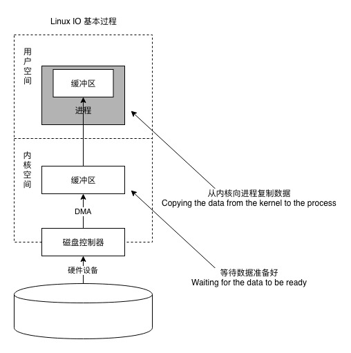
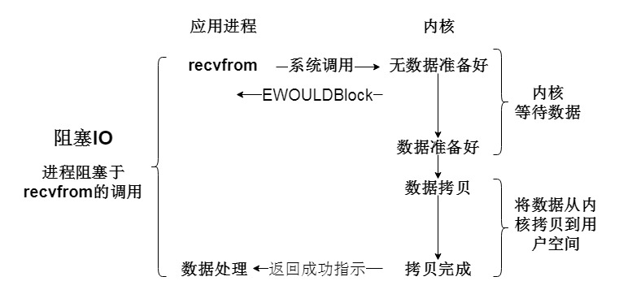
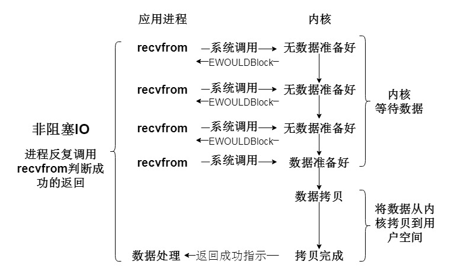
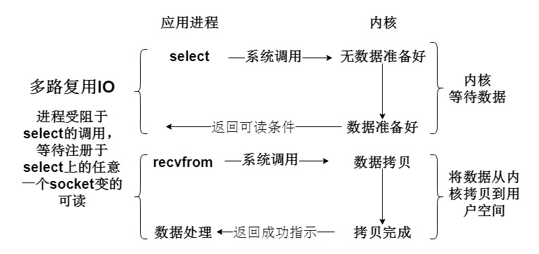
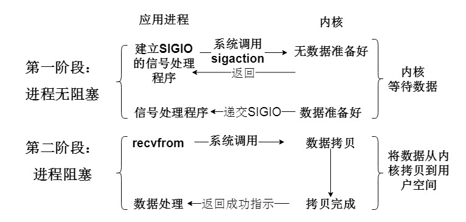
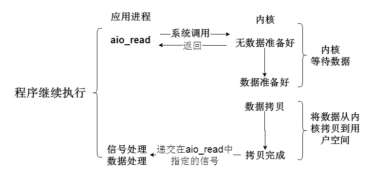
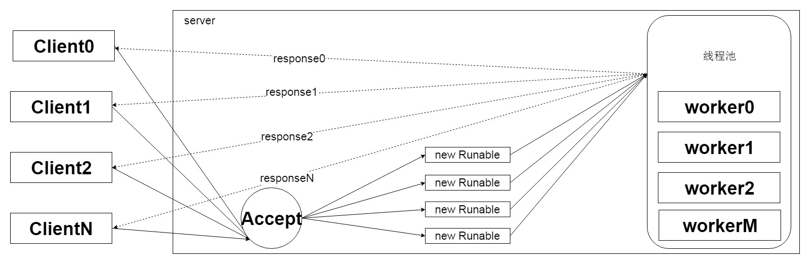

<!DOCTYPE HTML>
<html lang="" >
    <head>
        <meta charset="UTF-8">
        <meta content="text/html; charset=utf-8" http-equiv="Content-Type">
        <title>IO · GitBook</title>
        <meta http-equiv="X-UA-Compatible" content="IE=edge" />
        <meta name="description" content="">
        <meta name="generator" content="GitBook 3.2.3">
        
        
        
    
    <link rel="stylesheet" href="../../gitbook/style.css">

    
            
                
                <link rel="stylesheet" href="../../gitbook/gitbook-plugin-fontsettings/website.css">
                
            
                
                <link rel="stylesheet" href="../../gitbook/gitbook-plugin-highlight/website.css">
                
            
                
                <link rel="stylesheet" href="../../gitbook/gitbook-plugin-search/search.css">
                
            
                
                <link rel="stylesheet" href="../../gitbook/gitbook-plugin-expandable-chapters/expandable-chapters.css">
                
            
        

    

    
        
    
        
    
        
    
        
    
        
    
        
    

        
    
    
    <meta name="HandheldFriendly" content="true"/>
    <meta name="viewport" content="width=device-width, initial-scale=1, user-scalable=no">
    <meta name="apple-mobile-web-app-capable" content="yes">
    <meta name="apple-mobile-web-app-status-bar-style" content="black">
    <link rel="apple-touch-icon-precomposed" sizes="152x152" href="../../gitbook/images/apple-touch-icon-precomposed-152.png">
    <link rel="shortcut icon" href="../../gitbook/images/favicon.ico" type="image/x-icon">

    
    
    <link rel="prev" href="../concurrent/no-lock-singleton.html" />
    

    </head>
    <body>
        
<div class="book">
    <div class="book-summary">
        
            
<div id="book-search-input" role="search">
    <input type="text" placeholder="Type to search" />
</div>

            
                <nav role="navigation">
                


<ul class="summary">
    
    

    

    
        
        
    
        <li class="chapter " data-level="1.1" data-path="../../">
            
                <a href="../../">
            
                    
                    Introduction
            
                </a>
            

            
        </li>
    
        <li class="chapter " data-level="1.2" >
            
                <span>
            
                    
                    Project
            
                </span>
            

            
            <ul class="articles">
                
    
        <li class="chapter " data-level="1.2.1" >
            
                <span>
            
                    
                    CodeStyle
            
                </span>
            

            
            <ul class="articles">
                
    
        <li class="chapter " data-level="1.2.1.1" data-path="../../project/code/java.html">
            
                <a href="../../project/code/java.html">
            
                    
                    Java
            
                </a>
            

            
        </li>
    

            </ul>
            
        </li>
    
        <li class="chapter " data-level="1.2.2" data-path="../../project/code/">
            
                <a href="../../project/code/">
            
                    
                    Maven
            
                </a>
            

            
        </li>
    
        <li class="chapter " data-level="1.2.3" data-path="../../project/git/">
            
                <a href="../../project/git/">
            
                    
                    Git
            
                </a>
            

            
        </li>
    
        <li class="chapter " data-level="1.2.4" data-path="../../project/idea/">
            
                <a href="../../project/idea/">
            
                    
                    Idea
            
                </a>
            

            
            <ul class="articles">
                
    
        <li class="chapter " data-level="1.2.4.1" data-path="../../project/idea/">
            
                <a href="../../project/idea/">
            
                    
                    Idea快捷键
            
                </a>
            

            
        </li>
    

            </ul>
            
        </li>
    

            </ul>
            
        </li>
    
        <li class="chapter " data-level="1.3" >
            
                <span>
            
                    
                    Linux
            
                </span>
            

            
        </li>
    
        <li class="chapter " data-level="1.4" >
            
                <span>
            
                    
                    Socket
            
                </span>
            

            
        </li>
    
        <li class="chapter " data-level="1.5" data-path="../../network/basic/SUMMARY.html">
            
                <a href="../../network/basic/SUMMARY.html">
            
                    
                    Network
            
                </a>
            

            
            <ul class="articles">
                
    
        <li class="chapter " data-level="1.5.1" data-path="../../network/basic/SUMMARY.html">
            
                <a href="../../network/basic/SUMMARY.html">
            
                    
                    网络基础知识
            
                </a>
            

            
            <ul class="articles">
                
    
        <li class="chapter " data-level="1.5.1.1" data-path="../../network/basic/chapter0.html">
            
                <a href="../../network/basic/chapter0.html">
            
                    
                    网卡、集成器、交换机、路由工作原理
            
                </a>
            

            
        </li>
    
        <li class="chapter " data-level="1.5.1.2" data-path="../../network/basic/chapter1.html">
            
                <a href="../../network/basic/chapter1.html">
            
                    
                    网络协议
            
                </a>
            

            
        </li>
    
        <li class="chapter " data-level="1.5.1.3" data-path="../../network/basic/chapter2.html">
            
                <a href="../../network/basic/chapter2.html">
            
                    
                    HTTP报文结构
            
                </a>
            

            
        </li>
    
        <li class="chapter " data-level="1.5.1.4" data-path="../../network/basic/chapter3.html">
            
                <a href="../../network/basic/chapter3.html">
            
                    
                    HTTPS工作过程
            
                </a>
            

            
        </li>
    
        <li class="chapter " data-level="1.5.1.5" data-path="../../network/basic/chapter4.html">
            
                <a href="../../network/basic/chapter4.html">
            
                    
                    关于UDP单播、组播、广播等概念
            
                </a>
            

            
        </li>
    
        <li class="chapter " data-level="1.5.1.6" data-path="../../network/basic/chapter5.html">
            
                <a href="../../network/basic/chapter5.html">
            
                    
                    IP协议
            
                </a>
            

            
        </li>
    
        <li class="chapter " data-level="1.5.1.7" data-path="../../network/basic/chapter6.html">
            
                <a href="../../network/basic/chapter6.html">
            
                    
                    Auth2.0以及SSO
            
                </a>
            

            
        </li>
    
        <li class="chapter " data-level="1.5.1.8" data-path="../../network/basic/chapter7.html">
            
                <a href="../../network/basic/chapter7.html">
            
                    
                    DNS协议以及工作介绍
            
                </a>
            

            
        </li>
    

            </ul>
            
        </li>
    
        <li class="chapter " data-level="1.5.2" >
            
                <span>
            
                    
                    Netty
            
                </span>
            

            
        </li>
    
        <li class="chapter " data-level="1.5.3" >
            
                <span>
            
                    
                    Jersey
            
                </span>
            

            
        </li>
    

            </ul>
            
        </li>
    
        <li class="chapter " data-level="1.6" >
            
                <span>
            
                    
                    Java
            
                </span>
            

            
            <ul class="articles">
                
    
        <li class="chapter " data-level="1.6.1" data-path="../concurrent/SUMMARY.html">
            
                <a href="../concurrent/SUMMARY.html">
            
                    
                    concurrent
            
                </a>
            

            
            <ul class="articles">
                
    
        <li class="chapter " data-level="1.6.1.1" data-path="../concurrent/concurrency-parallellism.html">
            
                <a href="../concurrent/concurrency-parallellism.html">
            
                    
                    并发和并行
            
                </a>
            

            
        </li>
    
        <li class="chapter " data-level="1.6.1.2" >
            
                <a target="_blank" href="http://blog.sina.com.cn/s/blog_5a2bbc860101gedc.html">
            
                    
                    进程和线程
            
                </a>
            

            
        </li>
    
        <li class="chapter " data-level="1.6.1.3" data-path="../concurrent/thread.html">
            
                <a href="../concurrent/thread.html">
            
                    
                    Java中的线程
            
                </a>
            

            
        </li>
    
        <li class="chapter " data-level="1.6.1.4" data-path="../concurrent/thread-pool.html">
            
                <a href="../concurrent/thread-pool.html">
            
                    
                    Java中的线程池
            
                </a>
            

            
        </li>
    
        <li class="chapter " data-level="1.6.1.5" data-path="../concurrent/thread-sync-queue.html">
            
                <a href="../concurrent/thread-sync-queue.html">
            
                    
                    Java中的线程同步
            
                </a>
            

            
        </li>
    
        <li class="chapter " data-level="1.6.1.6" data-path="../concurrent/jmm.html">
            
                <a href="../concurrent/jmm.html">
            
                    
                    Java内存模型JMM
            
                </a>
            

            
        </li>
    
        <li class="chapter " data-level="1.6.1.7" data-path="../concurrent/volatile.html">
            
                <a href="../concurrent/volatile.html">
            
                    
                    Volatile
            
                </a>
            

            
        </li>
    
        <li class="chapter " data-level="1.6.1.8" data-path="../concurrent/synchronized.html">
            
                <a href="../concurrent/synchronized.html">
            
                    
                    Synchronized
            
                </a>
            

            
        </li>
    
        <li class="chapter " data-level="1.6.1.9" data-path="../concurrent/sync-lock.html">
            
                <a href="../concurrent/sync-lock.html">
            
                    
                    Lock
            
                </a>
            

            
        </li>
    
        <li class="chapter " data-level="1.6.1.10" data-path="../concurrent/sync-tools.html">
            
                <a href="../concurrent/sync-tools.html">
            
                    
                    同步工具类
            
                </a>
            

            
        </li>
    
        <li class="chapter " data-level="1.6.1.11" data-path="../concurrent/sync-aqs.html">
            
                <a href="../concurrent/sync-aqs.html">
            
                    
                    AQS
            
                </a>
            

            
        </li>
    
        <li class="chapter " data-level="1.6.1.12" data-path="../concurrent/no-lock-singleton.html">
            
                <a href="../concurrent/no-lock-singleton.html">
            
                    
                    无锁单例
            
                </a>
            

            
        </li>
    

            </ul>
            
        </li>
    
        <li class="chapter active" data-level="1.6.2" data-path="io.html">
            
                <a href="io.html">
            
                    
                    IO
            
                </a>
            

            
            <ul class="articles">
                
    
        <li class="chapter " data-level="1.6.2.1" >
            
                <span>
            
                    
                    BIO
            
                </span>
            

            
        </li>
    
        <li class="chapter " data-level="1.6.2.2" >
            
                <span>
            
                    
                    NIO
            
                </span>
            

            
        </li>
    
        <li class="chapter " data-level="1.6.2.3" >
            
                <span>
            
                    
                    AIO
            
                </span>
            

            
        </li>
    
        <li class="chapter " data-level="1.6.2.4" data-path="0io.html">
            
                <a href="0io.html">
            
                    
                    零拷贝IO
            
                </a>
            

            
        </li>
    

            </ul>
            
        </li>
    

            </ul>
            
        </li>
    
        <li class="chapter " data-level="1.7" >
            
                <span>
            
                    
                    JVM
            
                </span>
            

            
            <ul class="articles">
                
    
        <li class="chapter " data-level="1.7.1" >
            
                <span>
            
                    
                    Memory
            
                </span>
            

            
        </li>
    
        <li class="chapter " data-level="1.7.2" >
            
                <span>
            
                    
                    GC
            
                </span>
            

            
        </li>
    

            </ul>
            
        </li>
    
        <li class="chapter " data-level="1.8" data-path="../../databases/SUMMARY.html">
            
                <a href="../../databases/SUMMARY.html">
            
                    
                    DB
            
                </a>
            

            
            <ul class="articles">
                
    
        <li class="chapter " data-level="1.8.1" data-path="../../databases/mysql/SUMMARY.html">
            
                <a href="../../databases/mysql/SUMMARY.html">
            
                    
                    MySQL
            
                </a>
            

            
            <ul class="articles">
                
    
        <li class="chapter " data-level="1.8.1.1" data-path="../../databases/mysql/deploy-standalone.html">
            
                <a href="../../databases/mysql/deploy-standalone.html">
            
                    
                    单机部署
            
                </a>
            

            
        </li>
    
        <li class="chapter " data-level="1.8.1.2" data-path="../../databases/mysql/deploy-master-slave.html">
            
                <a href="../../databases/mysql/deploy-master-slave.html">
            
                    
                    主从部署
            
                </a>
            

            
        </li>
    
        <li class="chapter " data-level="1.8.1.3" data-path="../../databases/mysql/deploy-cluster-ndb.html">
            
                <a href="../../databases/mysql/deploy-cluster-ndb.html">
            
                    
                    NDB-Cluster部署
            
                </a>
            

            
        </li>
    
        <li class="chapter " data-level="1.8.1.4" data-path="../../databases/mysql/deploy-cluster-innodb.html">
            
                <a href="../../databases/mysql/deploy-cluster-innodb.html">
            
                    
                    INNODB-Cluster部署
            
                </a>
            

            
        </li>
    
        <li class="chapter " data-level="1.8.1.5" data-path="../../databases/mysql/chapter02.html">
            
                <a href="../../databases/mysql/chapter02.html">
            
                    
                    数据类型
            
                </a>
            

            
        </li>
    
        <li class="chapter " data-level="1.8.1.6" data-path="../../databases/mysql/chapter03.html">
            
                <a href="../../databases/mysql/chapter03.html">
            
                    
                    设计范式
            
                </a>
            

            
        </li>
    
        <li class="chapter " data-level="1.8.1.7" data-path="../../databases/mysql/chapter04.html">
            
                <a href="../../databases/mysql/chapter04.html">
            
                    
                    基本操作
            
                </a>
            

            
        </li>
    
        <li class="chapter " data-level="1.8.1.8" data-path="../../databases/mysql/chapter05.html">
            
                <a href="../../databases/mysql/chapter05.html">
            
                    
                    事务与隔离
            
                </a>
            

            
        </li>
    
        <li class="chapter " data-level="1.8.1.9" data-path="../../databases/mysql/chapter05.html">
            
                <a href="../../databases/mysql/chapter05.html">
            
                    
                    引擎
            
                </a>
            

            
        </li>
    
        <li class="chapter " data-level="1.8.1.10" data-path="../../databases/mysql/chapter07.html">
            
                <a href="../../databases/mysql/chapter07.html">
            
                    
                    锁
            
                </a>
            

            
        </li>
    
        <li class="chapter " data-level="1.8.1.11" data-path="../../databases/mysql/chapter08.html">
            
                <a href="../../databases/mysql/chapter08.html">
            
                    
                    索引
            
                </a>
            

            
        </li>
    
        <li class="chapter " data-level="1.8.1.12" data-path="../../databases/mysql/chapter09.html">
            
                <a href="../../databases/mysql/chapter09.html">
            
                    
                    调优
            
                </a>
            

            
        </li>
    
        <li class="chapter " data-level="1.8.1.13" data-path="../../databases/mysql/chapter10.html">
            
                <a href="../../databases/mysql/chapter10.html">
            
                    
                    8.0新特性
            
                </a>
            

            
        </li>
    
        <li class="chapter " data-level="1.8.1.14" data-path="../../databases/mysql/chapter11.html">
            
                <a href="../../databases/mysql/chapter11.html">
            
                    
                    读写分离
            
                </a>
            

            
        </li>
    
        <li class="chapter " data-level="1.8.1.15" data-path="../../databases/mysql/deploy-master-slave.html">
            
                <a href="../../databases/mysql/deploy-master-slave.html">
            
                    
                    主从模式
            
                </a>
            

            
        </li>
    
        <li class="chapter " data-level="1.8.1.16" data-path="../../databases/mysql/chapter15.html">
            
                <a href="../../databases/mysql/chapter15.html">
            
                    
                    其他数据库
            
                </a>
            

            
        </li>
    
        <li class="chapter " data-level="1.8.1.17" data-path="../../databases/mysql/op.html">
            
                <a href="../../databases/mysql/op.html">
            
                    
                    运维相关
            
                </a>
            

            
        </li>
    

            </ul>
            
        </li>
    
        <li class="chapter " data-level="1.8.2" data-path="../../databases/mongodb/SUMMARY.html">
            
                <a href="../../databases/mongodb/SUMMARY.html">
            
                    
                    MongoDB
            
                </a>
            

            
            <ul class="articles">
                
    
        <li class="chapter " data-level="1.8.2.1" data-path="../../databases/mongodb/chapter0.html">
            
                <a href="../../databases/mongodb/chapter0.html">
            
                    
                    单机部署
            
                </a>
            

            
        </li>
    
        <li class="chapter " data-level="1.8.2.2" data-path="../../databases/mongodb/chapter1.html">
            
                <a href="../../databases/mongodb/chapter1.html">
            
                    
                    主从部署
            
                </a>
            

            
        </li>
    
        <li class="chapter " data-level="1.8.2.3" data-path="../../databases/mongodb/chapter3.html">
            
                <a href="../../databases/mongodb/chapter3.html">
            
                    
                    分片部署
            
                </a>
            

            
        </li>
    
        <li class="chapter " data-level="1.8.2.4" data-path="../../databases/mongodb/chapter4.html">
            
                <a href="../../databases/mongodb/chapter4.html">
            
                    
                    运行监控
            
                </a>
            

            
        </li>
    
        <li class="chapter " data-level="1.8.2.5" data-path="../../databases/mongodb/chapter3.html">
            
                <a href="../../databases/mongodb/chapter3.html">
            
                    
                    库表操作
            
                </a>
            

            
        </li>
    
        <li class="chapter " data-level="1.8.2.6" data-path="../../databases/mongodb/chapter5.html">
            
                <a href="../../databases/mongodb/chapter5.html">
            
                    
                    数据操作
            
                </a>
            

            
        </li>
    

            </ul>
            
        </li>
    
        <li class="chapter " data-level="1.8.3" data-path="../../databases/redis/SUMMARY.html">
            
                <a href="../../databases/redis/SUMMARY.html">
            
                    
                    Redis
            
                </a>
            

            
        </li>
    
        <li class="chapter " data-level="1.8.4" >
            
                <span>
            
                    
                    Neo4j
            
                </span>
            

            
        </li>
    

            </ul>
            
        </li>
    
        <li class="chapter " data-level="1.9" >
            
                <span>
            
                    
                    JDBC
            
                </span>
            

            
            <ul class="articles">
                
    
        <li class="chapter " data-level="1.9.1" data-path="../../jdbc/jdbc/jdbc.html">
            
                <a href="../../jdbc/jdbc/jdbc.html">
            
                    
                    JDBC
            
                </a>
            

            
        </li>
    
        <li class="chapter " data-level="1.9.2" data-path="../../jdbc/jdbc/pool.html">
            
                <a href="../../jdbc/jdbc/pool.html">
            
                    
                    JDBCPool
            
                </a>
            

            
        </li>
    
        <li class="chapter " data-level="1.9.3" data-path="../../jdbc/mybatis/">
            
                <a href="../../jdbc/mybatis/">
            
                    
                    MyBatis
            
                </a>
            

            
        </li>
    
        <li class="chapter " data-level="1.9.4" data-path="../../jdbc/sharding/">
            
                <a href="../../jdbc/sharding/">
            
                    
                    Sharding
            
                </a>
            

            
        </li>
    

            </ul>
            
        </li>
    
        <li class="chapter " data-level="1.10" >
            
                <span>
            
                    
                    Web
            
                </span>
            

            
            <ul class="articles">
                
    
        <li class="chapter " data-level="1.10.1" data-path="../../web/nginx/SUMMARY.html">
            
                <a href="../../web/nginx/SUMMARY.html">
            
                    
                    Nginx
            
                </a>
            

            
        </li>
    
        <li class="chapter " data-level="1.10.2" >
            
                <span>
            
                    
                    Apache
            
                </span>
            

            
        </li>
    
        <li class="chapter " data-level="1.10.3" >
            
                <span>
            
                    
                    Tomcat
            
                </span>
            

            
        </li>
    

            </ul>
            
        </li>
    
        <li class="chapter " data-level="1.11" >
            
                <span>
            
                    
                    Distributed
            
                </span>
            

            
            <ul class="articles">
                
    
        <li class="chapter " data-level="1.11.1" data-path="../../cap/cap.html">
            
                <a href="../../cap/cap.html">
            
                    
                    CAP
            
                </a>
            

            
        </li>
    
        <li class="chapter " data-level="1.11.2" >
            
                <span>
            
                    
                    Lock
            
                </span>
            

            
        </li>
    
        <li class="chapter " data-level="1.11.3" >
            
                <span>
            
                    
                    Transaction
            
                </span>
            

            
        </li>
    
        <li class="chapter " data-level="1.11.4" >
            
                <span>
            
                    
                    Zookeeper
            
                </span>
            

            
        </li>
    
        <li class="chapter " data-level="1.11.5" >
            
                <span>
            
                    
                    Dubbo
            
                </span>
            

            
        </li>
    
        <li class="chapter " data-level="1.11.6" data-path="../../middleware/kafka/SUMMARY.html">
            
                <a href="../../middleware/kafka/SUMMARY.html">
            
                    
                    Kafka
            
                </a>
            

            
            <ul class="articles">
                
    
        <li class="chapter " data-level="1.11.6.1" data-path="../../middleware/kafka/chapter0.html">
            
                <a href="../../middleware/kafka/chapter0.html">
            
                    
                    安装
            
                </a>
            

            
        </li>
    
        <li class="chapter " data-level="1.11.6.2" data-path="../../middleware/kafka/chapter2.html">
            
                <a href="../../middleware/kafka/chapter2.html">
            
                    
                    高可用集群
            
                </a>
            

            
        </li>
    
        <li class="chapter " data-level="1.11.6.3" data-path="../../middleware/kafka/chapter3.html">
            
                <a href="../../middleware/kafka/chapter3.html">
            
                    
                    实现原理
            
                </a>
            

            
        </li>
    
        <li class="chapter " data-level="1.11.6.4" data-path="../../middleware/kafka/chapter1.html">
            
                <a href="../../middleware/kafka/chapter1.html">
            
                    
                    常用命令
            
                </a>
            

            
        </li>
    

            </ul>
            
        </li>
    
        <li class="chapter " data-level="1.11.7" >
            
                <span>
            
                    
                    RabbitMQ
            
                </span>
            

            
        </li>
    
        <li class="chapter " data-level="1.11.8" >
            
                <span>
            
                    
                    ZeroMQ
            
                </span>
            

            
        </li>
    
        <li class="chapter " data-level="1.11.9" >
            
                <span>
            
                    
                    分布式事务
            
                </span>
            

            
        </li>
    

            </ul>
            
        </li>
    
        <li class="chapter " data-level="1.12" >
            
                <span>
            
                    
                    Session
            
                </span>
            

            
            <ul class="articles">
                
    
        <li class="chapter " data-level="1.12.1" >
            
                <span>
            
                    
                    SSO
            
                </span>
            

            
        </li>
    
        <li class="chapter " data-level="1.12.2" >
            
                <span>
            
                    
                    OAuth2.0
            
                </span>
            

            
        </li>
    

            </ul>
            
        </li>
    
        <li class="chapter " data-level="1.13" data-path="../../spring-context/SUMMARY.html">
            
                <a href="../../spring-context/SUMMARY.html">
            
                    
                    Spring-context
            
                </a>
            

            
            <ul class="articles">
                
    
        <li class="chapter " data-level="1.13.1" data-path="../../spring-context/ioc-index.html">
            
                <a href="../../spring-context/ioc-index.html">
            
                    
                    SpringIOC
            
                </a>
            

            
        </li>
    
        <li class="chapter " data-level="1.13.2" data-path="../../spring-context/aop-index.html">
            
                <a href="../../spring-context/aop-index.html">
            
                    
                    SpringAOP
            
                </a>
            

            
        </li>
    
        <li class="chapter " data-level="1.13.3" data-path="../../spring-context/mvc-index.html">
            
                <a href="../../spring-context/mvc-index.html">
            
                    
                    SpringMVC
            
                </a>
            

            
        </li>
    
        <li class="chapter " data-level="1.13.4" data-path="../../spring-context/do-get-bean.html">
            
                <a href="../../spring-context/do-get-bean.html">
            
                    
                    DoGetBean
            
                </a>
            

            
        </li>
    
        <li class="chapter " data-level="1.13.5" data-path="../../spring-context/transactional.html">
            
                <a href="../../spring-context/transactional.html">
            
                    
                    事务与隔离
            
                </a>
            

            
        </li>
    

            </ul>
            
        </li>
    
        <li class="chapter " data-level="1.14" data-path="../../spring-cloud/SUMMARY.html">
            
                <a href="../../spring-cloud/SUMMARY.html">
            
                    
                    Spring-Cloud
            
                </a>
            

            
            <ul class="articles">
                
    
        <li class="chapter " data-level="1.14.1" data-path="../../spring-cloud/eureka/SUMMARY.html">
            
                <a href="../../spring-cloud/eureka/SUMMARY.html">
            
                    
                    Register
            
                </a>
            

            
            <ul class="articles">
                
    
        <li class="chapter " data-level="1.14.1.1" data-path="../../spring-cloud/eureka/Chapter01.html">
            
                <a href="../../spring-cloud/eureka/Chapter01.html">
            
                    
                    使用示例
            
                </a>
            

            
        </li>
    
        <li class="chapter " data-level="1.14.1.2" data-path="../../spring-cloud/eureka/Chapter02.html">
            
                <a href="../../spring-cloud/eureka/Chapter02.html">
            
                    
                    源码分析
            
                </a>
            

            
        </li>
    

            </ul>
            
        </li>
    
        <li class="chapter " data-level="1.14.2" >
            
                <span>
            
                    
                    Gateway
            
                </span>
            

            
        </li>
    
        <li class="chapter " data-level="1.14.3" >
            
                <span>
            
                    
                    Config
            
                </span>
            

            
        </li>
    
        <li class="chapter " data-level="1.14.4" >
            
                <span>
            
                    
                    Breaker
            
                </span>
            

            
        </li>
    
        <li class="chapter " data-level="1.14.5" >
            
                <span>
            
                    
                    Tracing
            
                </span>
            

            
        </li>
    

            </ul>
            
        </li>
    
        <li class="chapter " data-level="1.15" data-path="../../logger/SUMMARY.html">
            
                <a href="../../logger/SUMMARY.html">
            
                    
                    Logger
            
                </a>
            

            
            <ul class="articles">
                
    
        <li class="chapter " data-level="1.15.1" data-path="../../logger/chapter1.html">
            
                <a href="../../logger/chapter1.html">
            
                    
                    日志门面
            
                </a>
            

            
        </li>
    

            </ul>
            
        </li>
    
        <li class="chapter " data-level="1.16" >
            
                <a target="_blank" href="http://m.biancheng.net/design_pattern/">
            
                    
                    Design pattern
            
                </a>
            

            
        </li>
    
        <li class="chapter " data-level="1.17" data-path="../../ddd/SUMMARY.html">
            
                <a href="../../ddd/SUMMARY.html">
            
                    
                    DDD
            
                </a>
            

            
            <ul class="articles">
                
    
        <li class="chapter " data-level="1.17.1" data-path="../../ddd/model-concept/SUMMARY.html">
            
                <a href="../../ddd/model-concept/SUMMARY.html">
            
                    
                    ModelConcept
            
                </a>
            

            
            <ul class="articles">
                
    
        <li class="chapter " data-level="1.17.1.1" data-path="../../ddd/model-concept/chapter3.html">
            
                <a href="../../ddd/model-concept/chapter3.html">
            
                    
                    数据模型
            
                </a>
            

            
        </li>
    

            </ul>
            
        </li>
    
        <li class="chapter " data-level="1.17.2" data-path="../../ddd/uml/SUMMARY.html">
            
                <a href="../../ddd/uml/SUMMARY.html">
            
                    
                    UML
            
                </a>
            

            
        </li>
    

            </ul>
            
        </li>
    
        <li class="chapter " data-level="1.18" data-path="../../docker/SUMMARY.html">
            
                <a href="../../docker/SUMMARY.html">
            
                    
                    Docker
            
                </a>
            

            
            <ul class="articles">
                
    
        <li class="chapter " data-level="1.18.1" data-path="../../docker/chapter1.html">
            
                <a href="../../docker/chapter1.html">
            
                    
                    安装与基本操作
            
                </a>
            

            
        </li>
    

            </ul>
            
        </li>
    
        <li class="chapter " data-level="1.19" >
            
                <span>
            
                    
                    工程应用
            
                </span>
            

            
            <ul class="articles">
                
    
        <li class="chapter " data-level="1.19.1" >
            
                <span>
            
                    
                    内容社交
            
                </span>
            

            
        </li>
    
        <li class="chapter " data-level="1.19.2" >
            
                <span>
            
                    
                    IM
            
                </span>
            

            
        </li>
    
        <li class="chapter " data-level="1.19.3" >
            
                <span>
            
                    
                    UDP-CHANNEL
            
                </span>
            

            
        </li>
    
        <li class="chapter " data-level="1.19.4" data-path="../../DuplicateRemoval.md">
            
                <span>
            
                    
                    大数据去重方案
            
                </a>
            

            
        </li>
    

            </ul>
            
        </li>
    

    

    <li class="divider"></li>

    <li>
        <a href="https://www.gitbook.com" target="blank" class="gitbook-link">
            Published with GitBook
        </a>
    </li>
</ul>


                </nav>
            
        
    </div>

    <div class="book-body">
        
            <div class="body-inner">
                
                    

<div class="book-header" role="navigation">
    

    <!-- Title -->
    <h1>
        <i class="fa fa-circle-o-notch fa-spin"></i>
        <a href="../.." >IO</a>
    </h1>
</div>


                    <div class="page-wrapper" tabindex="-1" role="main">
                        <div class="page-inner">
                            
<div id="book-search-results">
    <div class="search-noresults">
    
                                <section class="normal markdown-section">
                                
                                <h1 id="io">IO</h1>
<ul>
<li><h2 id="&#x6587;&#x4EF6;&#x63CF;&#x8FF0;&#x7B26;fd">&#x6587;&#x4EF6;&#x63CF;&#x8FF0;&#x7B26;fd</h2>
</li>
</ul>
<p>lunix&#x7CFB;&#x7EDF;&#x628A;&#x4EFB;&#x4F55;&#x5BF9;&#x8C61;&#x770B;&#x505A;&#x662F;&#x6587;&#x4EF6;&#xFF0C;&#x6587;&#x4EF6;&#x5C31;&#x662F;&#x4E00;&#x4E32;&#x4E8C;&#x8FDB;&#x5236;&#x6D41;&#xFF0C;&#x5BF9;&#x6570;&#x636E;(&#x6D41;)&#x7684;&#x8BFB;&#x5199;&#x64CD;&#x4F5C;&#x5C31;&#x662F;&#x5BF9;&#x6587;&#x4EF6;&#x7684;&#x64CD;&#x4F5C;&#xFF0C;&#x6240;&#x4EE5;&#x5F53;&#x6211;&#x4EEC;&#x7684;&#x8FDB;&#x7A0B;&#x5728;&#x505A;&#x8BFB;&#x5199;&#x64CD;&#x4F5C;&#x65F6;&#x4F1A;&#x8FD4;&#x56DE;&#x4E00;&#x4E2A;&#x8BB0;&#x5F55;&#x8BBF;&#x95EE;&#x4F4D;&#x7F6E;&#x7684;&#x7D22;&#x5F15;&#x503C;,&#x5F53;&#x6211;&#x4EEC;&#x7EE7;&#x7EED;&#x64CD;&#x4F5C;&#x8BE5;&#x6587;&#x4EF6;&#x65F6;&#x53EF;&#x76F4;&#x63A5;&#x901A;&#x8FC7;&#x8FD9;&#x4E2A;&#x7D22;&#x5F15;&#x503C;&#x5230;&#x8FBE;&#x4E0A;&#x4E00;&#x6B21;&#x7684;&#x4F4D;&#x7F6E;&#x3002;</p>
<p>&#x6587;&#x4EF6;&#x63CF;&#x8FF0;&#x7B26;(file description)&#xFF0C;&#x7528;&#x4E8E;&#x8868;&#x8FF0;&#x6307;&#x5411;&#x6587;&#x4EF6;&#x5F15;&#x7528;&#x7684;&#x62BD;&#x8C61;&#xFF0C;&#x6587;&#x4EF6;&#x63CF;&#x8FF0;&#x7B26;&#x5728;&#x5F62;&#x5F0F;&#x4E0A;&#x662F;&#x4E00;&#x4E2A;&#x975E;&#x8D1F;&#x6574;&#x6570;,&#x5B9E;&#x9645;&#x4E0A;&#x5B83;&#x662F;&#x4E00;&#x4E2A;&#x7D22;&#x5F15;&#x503C;,&#x6307;&#x5411;&#x5185;&#x6838;&#x4E3A;&#x6BCF;&#x4E00;&#x4E2A;&#x8FDB;&#x7A0B;&#x6240;&#x7EF4;&#x62A4;&#x7684;&#x8BE5;&#x8FDB;&#x7A0B;&#x6253;&#x5F00;&#x6587;&#x4EF6;&#x7684;&#x8BB0;&#x5F55;&#x8868;&#xFF0C;&#x5F53;&#x7A0B;&#x5E8F;&#x6253;&#x5F00;&#x4E00;&#x4E2A;&#x73B0;&#x6709;&#x6587;&#x4EF6;&#x6216;&#x8005;&#x521B;&#x5EFA;&#x4E00;&#x4E2A;&#x65B0;&#x6587;&#x4EF6;&#x65F6;&#xFF0C;&#x5185;&#x6838;&#x5C31;&#x5411;&#x8BE5;&#x8FDB;&#x7A0B;&#x8FD4;&#x56DE;&#x4E00;&#x4E2A;&#x6587;&#x4EF6;&#x63CF;&#x8FF0;&#x7B26;&#x3002;</p>
<ul>
<li><h2 id="&#x7528;&#x6237;&#x7A7A;&#x95F4;&#x548C;&#x5185;&#x6838;&#x7A7A;&#x95F4;&#x4E0E;&#x8FDB;&#x7A0B;">&#x7528;&#x6237;&#x7A7A;&#x95F4;&#x548C;&#x5185;&#x6838;&#x7A7A;&#x95F4;&#x4E0E;&#x8FDB;&#x7A0B;</h2>
</li>
</ul>
<p>&#x73B0;&#x5728;&#x64CD;&#x4F5C;&#x7CFB;&#x7EDF;&#x90FD;&#x662F;&#x91C7;&#x7528;&#x865A;&#x62DF;&#x5B58;&#x50A8;&#x5668;,&#x5BF9;&#x4E8E;32&#x4F4D;&#x64CD;&#x4F5C;&#x7CFB;&#x7EDF;,&#x5B83;&#x7684;&#x5BFB;&#x5740;&#x7A7A;&#x95F4;&#x4E3A;4G.&#x64CD;&#x4F5C;&#x7CFB;&#x7EDF;&#x7684;&#x6838;&#x5FC3;&#x662F;&#x5185;&#x6838;,&#x72EC;&#x7ACB;&#x4E8E;&#x666E;&#x901A;&#x7A0B;&#x5E8F;,&#x53EF;&#x4EE5;&#x8BBF;&#x95EE;&#x53D7;&#x4FDD;&#x62A4;&#x7684;&#x5185;&#x5B58;&#x7A7A;&#x95F4;,&#x4E5F;&#x6709;&#x8BBF;&#x95EE;&#x5E95;&#x5C42;&#x786C;&#x4EF6;&#x8BBE;&#x5907;&#x7684;&#x6240;&#x6709;&#x6743;&#x9650;.&#x4E3A;&#x4E86;&#x4FDD;&#x8BC1;&#x7528;&#x6237;&#x8FDB;&#x7A0B;&#x4E0D;&#x80FD;&#x76F4;&#x63A5;&#x64CD;&#x4F5C;&#x5185;&#x6838;,&#x4FDD;&#x8BC1;&#x5185;&#x6838;&#x5B89;&#x5168;,&#x64CD;&#x4F5C;&#x7CFB;&#x7EDF;&#x5C06;&#x865A;&#x62DF;&#x7A7A;&#x95F4;&#x5212;&#x5206;&#x4E3A;&#x4E24;&#x90E8;&#x5206;,&#x4E00;&#x90E8;&#x5206;&#x79F0;&#x4E3A;&#x5185;&#x6838;&#x7A7A;&#x95F4;,&#x4E00;&#x90E8;&#x5206;&#x79F0;&#x4E3A;&#x7528;&#x6237;&#x7A7A;&#x95F4;,&#x8FD9;&#x4E24;&#x90E8;&#x5206;&#x7A7A;&#x95F4;&#x5927;&#x5C0F;&#x548C;&#x5730;&#x5740;&#x8303;&#x56F4;&#x5206;&#x522B;&#x4E3A;1G&#x548C;3G,&#x5185;&#x6838;&#x7A7A;&#x95F4;&#x4F9B;&#x5185;&#x6838;&#x4F7F;&#x7528;,&#x7528;&#x6237;&#x7A7A;&#x95F4;&#x4F9B;&#x7528;&#x6237;&#x8FDB;&#x7A0B;&#x4F7F;&#x7528;&#x3002;</p>
<p>&#x8FDB;&#x7A0B;&#x662F;&#x7A0B;&#x5E8F;&#x7684;&#x4E00;&#x6B21;&#x52A8;&#x6001;&#x6267;&#x884C;&#x8FC7;&#x7A0B;,&#x5B83;&#x7ECF;&#x5386;&#x4E86;&#x4ECE;&#x4EE3;&#x7801;&#x52A0;&#x8F7D;,&#x6267;&#x884C;&#x5230;&#x6267;&#x884C;&#x5B8C;&#x6BD5;&#x7684;&#x4E00;&#x4E2A;&#x5B8C;&#x6574;&#x8FC7;&#x7A0B;,&#x8FD9;&#x4E2A;&#x8FC7;&#x7A0B;&#x4E5F;&#x662F;&#x8FDB;&#x7A0B;&#x672C;&#x8EAB;&#x4ECE;&#x4EA7;&#x751F;,&#x53D1;&#x5C55;&#x5230;&#x6700;&#x7EC8;&#x6D88;&#x4EA1;&#x7684;&#x8FC7;&#x7A0B;,&#x591A;&#x8FDB;&#x7A0B;&#x64CD;&#x4F5C;&#x7CFB;&#x7EDF;&#x80FD;&#x540C;&#x65F6;&#x8FD0;&#x884C;&#x591A;&#x4E2A;&#x8FDB;&#x7A0B;,&#x7531;&#x4E8E;CPU&#x5177;&#x5907;&#x5206;&#x65F6;&#x673A;&#x5236;,&#x6240;&#x4EE5;&#x6BCF;&#x4E2A;&#x8FDB;&#x7A0B;&#x90FD;&#x80FD;&#x83B7;&#x5F97;&#x81EA;&#x5DF1;&#x7684;&#x65F6;&#x95F4;&#x7247;,&#x7531;&#x4E8E;CPU&#x6267;&#x884C;&#x901F;&#x5EA6;&#x975E;&#x5E38;&#x5FEB;,&#x4F7F;&#x5F97;&#x6240;&#x6709;&#x7A0B;&#x5E8F;&#x597D;&#x50CF;&#x662F;&#x5728;&#x540C;&#x65F6;&#x8FD0;&#x884C;&#x4E00;&#x6837;&#x3002;</p>
<p>&#x5728;&#x64CD;&#x4F5C;&#x7CFB;&#x7EDF;&#x4E2D;&#x8FDB;&#x7A0B;&#x662F;&#x8FDB;&#x884C;&#x7CFB;&#x7EDF;&#x8D44;&#x6E90;&#x5206;&#x914D;,&#x8C03;&#x5EA6;&#x548C;&#x7BA1;&#x7406;&#x7684;&#x6700;&#x5C0F;&#x5355;&#x4F4D;,&#x8FDB;&#x7A0B;&#x5728;&#x6267;&#x884C;&#x8FC7;&#x7A0B;&#x4E2D;&#x62E5;&#x6709;&#x72EC;&#x7ACB;&#x7684;&#x5185;&#x5B58;&#x5355;&#x5143;,&#x5F53;&#x64CD;&#x4F5C;&#x7CFB;&#x7EDF;&#x52A0;&#x8F7D;&#x7A0B;&#x5E8F;&#x5230;&#x5185;&#x5B58;&#x4E2D;,&#x64CD;&#x4F5C;&#x7CFB;&#x7EDF;&#x4F1A;&#x4E3A;&#x6BCF;&#x4E2A;&#x8FDB;&#x7A0B;&#x5206;&#x914D;4G&#x7684;&#x865A;&#x62DF;&#x5185;&#x5B58;&#x7A7A;&#x95F4;.&#x5730;&#x5740;&#x4ECE;0x00000000&#x5230;0xFFFFFFFF,&#x5176;&#x4E2D;1G(3-4)&#x662F;&#x5185;&#x6838;&#x6240;&#x4F7F;&#x7528;&#x7684;&#x5185;&#x6838;&#x7A7A;&#x95F4;,3G(0-3)&#x662F;&#x8FDB;&#x7A0B;&#x4F7F;&#x7528;&#x7684;&#x7528;&#x6237;&#x7A7A;&#x95F4;&#x3002;</p>
<p>&#x8FD9;&#x91CC;&#x8981;&#x6CE8;&#x610F;&#x7684;&#x662F;&#x7CFB;&#x7EDF;&#x4E3A;&#x6BCF;&#x4E2A;&#x8FDB;&#x7A0B;&#x5206;&#x914D;4G&#x7684;&#x865A;&#x62DF;&#x5185;&#x5B58;&#x7A7A;&#x95F4;,&#x5B9E;&#x9645;&#x4E0A;&#x8FD9;4G&#x7684;&#x865A;&#x62DF;&#x5185;&#x5B58;&#x662F;&#x4E00;&#x4E2A;&#x53EF;&#x5BFB;&#x5740;&#x7684;&#x5730;&#x5740;&#x8303;&#x56F4;,&#x5E76;&#x4E0D;&#x662F;&#x5B9E;&#x9645;&#x7684;&#x7269;&#x7406;&#x5185;&#x5B58;,&#x8FD9;&#x4E2A;&#x53EF;&#x5BFB;&#x5740;&#x7684;4G&#x5730;&#x5740;&#x8303;&#x56F4;&#x7531;&#x5185;&#x5B58;&#x533A;&#x57DF;&#x8868;&#x6765;&#x7BA1;&#x7406;.&#x6BCF;&#x4E2A;&#x8FDB;&#x7A0B;&#x6240;&#x7528;&#x5230;&#x7684;&#x5185;&#x5B58;&#x533A;&#x57DF;&#x4F1A;&#x901A;&#x8FC7;&#x9875;&#x8868;&#x6620;&#x5C04;&#x5230;&#x7269;&#x7406;&#x5185;&#x5B58;,&#x6240;&#x4EE5;&#x6BCF;&#x4E2A;&#x8FDB;&#x7A0B;&#x90FD;&#x53EF;&#x4EE5;&#x4F7F;&#x7528;&#x540C;&#x6837;&#x7684;&#x865A;&#x62DF;&#x5185;&#x5B58;&#x5730;&#x5740;&#x800C;&#x4E0D;&#x51B2;&#x7A81;,&#x4ED6;&#x4EEC;&#x7684;&#x5B9E;&#x9645;&#x7269;&#x7406;&#x5730;&#x5740;&#x662F;&#x4E0D;&#x540C;&#x7684;&#x3002;</p>
<p>&#x4E3A;&#x4E86;&#x63A7;&#x5236;&#x8FDB;&#x7A0B;&#x7684;&#x6267;&#x884C;,&#x5185;&#x6838;&#x5FC5;&#x987B;&#x6709;&#x80FD;&#x529B;&#x6302;&#x8D77;&#x6B63;&#x5728;CPU&#x4E0A;&#x8FD0;&#x884C;&#x7684;&#x8FDB;&#x7A0B;,&#x5E76;&#x6062;&#x590D;&#x4EE5;&#x524D;&#x6302;&#x8D77;&#x7684;&#x67D0;&#x4E2A;&#x8FDB;&#x7A0B;&#x7684;&#x6267;&#x884C;.&#x8FD9;&#x79CD;&#x884C;&#x4E3A;&#x88AB;&#x79F0;&#x4E3A;&#x8FDB;&#x7A0B;&#x5207;&#x6362;,&#x4EFB;&#x52A1;&#x5207;&#x6362;&#x6216;&#x4E0A;&#x4E0B;&#x6587;&#x5207;&#x6362;,&#x5C3D;&#x7BA1;&#x6BCF;&#x4E2A;&#x8FDB;&#x7A0B;&#x90FD;&#x6709;&#x81EA;&#x5DF1;&#x7684;&#x5730;&#x5740;&#x7A7A;&#x95F4;,&#x4F46;&#x6240;&#x6709;&#x8FDB;&#x7A0B;&#x90FD;&#x5728;&#x540C;&#x4E00;&#x4E2A;CPU&#x5BC4;&#x5B58;&#x5668;&#x91CC;,&#x56E0;&#x6B64;,&#x5728;&#x6062;&#x590D;&#x4E00;&#x4E2A;&#x8FDB;&#x7A0B;&#x6267;&#x884C;&#x524D;,&#x5185;&#x6838;&#x5FC5;&#x987B;&#x786E;&#x4FDD;&#x6BCF;&#x4E2A;&#x5BC4;&#x5B58;&#x5668;&#x4E2D;&#x542B;&#x6709;&#x6302;&#x8D77;&#x8FDB;&#x7A0B;&#x65F6;&#x6240;&#x9700;&#x8981;&#x7684;&#x503C;.&#x8FDB;&#x7A0B;&#x6062;&#x590D;&#x6267;&#x884C;&#x524D;&#x5FC5;&#x987B;&#x88C5;&#x5165;&#x5BC4;&#x5B58;&#x5668;&#x7684;&#x4E00;&#x7EC4;&#x6570;&#x636E;,&#x79F0;&#x4E3A;&#x786C;&#x4EF6;&#x4E0A;&#x4E0B;&#x6587;(hardware Context),&#x786C;&#x4EF6;&#x4E0A;&#x4E0B;&#x6587;&#x5305;&#x542B;&#x4E86;&#x8FDB;&#x7A0B;&#x6062;&#x590D;&#x65F6;&#x6240;&#x9700;&#x8981;&#x7684;&#x6240;&#x6709;&#x4FE1;&#x606F;&#x3002;&#x4E00;&#x4E2A;&#x8FDB;&#x7A0B;&#x7684;&#x8FD0;&#x884C;&#x8F6C;&#x5230;&#x53E6;&#x4E00;&#x4E2A;&#x8FDB;&#x7A0B;&#x4E0A;,&#x9700;&#x8981;&#x505A;&#x5F88;&#x591A;&#x4EA4;&#x63A5;&#x8BB0;&#x5F55;&#x4F4D;&#x7F6E;&#x7684;&#x52A8;&#x4F5C;&#x3002;</p>
<p>&#x8FDB;&#x7A0B;&#x7684;&#x5207;&#x6362;&#x548C;&#x963B;&#x585E;</p>
<p>&#x8FDB;&#x7A0B;&#x7684;&#x5207;&#x6362;&#x662F;&#x5185;&#x6838;&#x6267;&#x884C;&#x8BE5;&#x8FDB;&#x7A0B;&#x7684;&#x65F6;&#x95F4;&#x7247;&#x5230;&#x671F;&#x800C;&#x4E3B;&#x52A8;&#x6302;&#x8D77;&#x8BE5;&#x8FDB;&#x7A0B;,&#x5207;&#x6362;&#x5230;&#x53E6;&#x4E00;&#x4E2A;&#x8FDB;&#x7A0B;&#x7684;&#x52A8;&#x4F5C;.&#x4F46;&#x662F;&#x8FDB;&#x7A0B;&#x5728;&#x4E00;&#x4E2A;&#x65F6;&#x95F4;&#x7247;&#x5185;&#x6267;&#x884C;&#x8FC7;&#x7A0B;&#x4E2D;,&#x9047;&#x5230;&#x67D0;&#x4E9B;&#x671F;&#x671B;&#x7684;&#x4E8B;&#x4EF6;&#x672A;&#x53D1;&#x751F;&#x90A3;&#x4E48;&#x8FDB;&#x7A0B;&#x5C31;&#x4F1A;&#x653E;&#x5F03;&#x5904;&#x7406;&#x673A;&#x6210;&#x4E86;&#x963B;&#x585E;,&#x81F4;&#x4F7F;&#x8FDB;&#x7A0B;&#x963B;&#x585E;&#x7684;&#x5178;&#x578B;&#x4E8B;&#x4EF6;&#x6709;&#xFF1A;&#x8BF7;&#x6C42;I/O&#xFF0C;&#x7533;&#x8BF7;&#x7F13;&#x51B2;&#x7A7A;&#x95F4;&#x7B49;&#x3002;</p>
<p>&#x7F13;&#x5B58;IO</p>
<p>&#x7F13;&#x51B2;&#x533A;&#x4EE5;&#x53CA;&#x5BF9;&#x7F13;&#x51B2;&#x533A;&#x7684;&#x64CD;&#x4F5C;,&#x662F;&#x6240;&#x6709;IO&#x7684;&#x57FA;&#x7840;,&#x8FDB;&#x7A0B;&#x6267;&#x884C;IO&#x64CD;&#x4F5C;&#x53EF;&#x4EE5;&#x7B80;&#x5355;&#x7684;&#x63CF;&#x8FF0;&#x4E3A;&#x7F13;&#x51B2;&#x533A;&#x7684;&#x6570;&#x636E;&#x8BFB;&#x4E0E;&#x5199;&#x3002;<br>&#x5728;&#x6570;&#x636E;read&#x4F20;&#x8F93;&#x8FC7;&#x7A0B;&#x4E2D;&#x9700;&#x8981;&#x5C06;&#x6570;&#x636E;&#x4ECE;&#x78C1;&#x76D8;&#x4E2D;&#x62F7;&#x8D1D;&#x5230;&#x5185;&#x6838;&#x7A7A;&#x95F4;&#x7684;&#x7684;&#x7F13;&#x51B2;&#x533A;,&#x7136;&#x540E;&#x4ECE;&#x5185;&#x6838;&#x7A7A;&#x95F4;&#x62F7;&#x8D1D;&#x5230;&#x8FDB;&#x7A0B;&#x7528;&#x6237;&#x7A7A;&#x95F4;,&#x8FD9;&#x4E2A;&#x8FC7;&#x7A0B;&#x4F1A;&#x7ECF;&#x5386;&#x4E24;&#x4E2A;&#x9636;&#x6BB5;:1,&#x7B49;&#x5F85;&#x6570;&#x636E;&#x51C6;&#x5907;,2,&#x5C06;&#x6570;&#x636E;&#x91CD;&#x5185;&#x6838;&#x62F7;&#x8D1D;&#x5230;&#x7528;&#x6237;&#x7A7A;&#x95F4;,&#x800C;&#x4E14;&#x8FD9;&#x4E24;&#x4E2A;&#x8FC7;&#x7A0B;&#x662F;&#x9700;&#x8981;&#x65F6;&#x95F4;&#x7684;,&#x8FD9;&#x5C31;&#x9020;&#x6210;&#x4E86;&#x963B;&#x585E;.&#x79F0;&#x4E3A;&#x963B;&#x585E;IO&#x3002;&#x5728;&#x8FD9;&#x4E2A;&#x57FA;&#x7840;&#x4E0A;,&#x4E3A;&#x4E86;&#x5145;&#x5206;&#x5229;&#x7528;CPU&#x8D44;&#x6E90;,&#x53D1;&#x5C55;&#x51FA;&#x4E86;&#x975E;&#x963B;&#x585E;IO,IO&#x591A;&#x8DEF;&#x590D;&#x7528;,&#x4FE1;&#x53F7;&#x9A71;&#x52A8;IO,&#x5F02;&#x6B65;IO&#x3002;&#x5F62;&#x6210;&#x4E86;Linux&#x4E2D;&#x4E94;&#x79CD;IO&#x7C7B;&#x578B;&#x3002;&#x5176;&#x4E2D;&#x524D;&#x56DB;&#x79CD;&#x90FD;&#x662F;&#x540C;&#x6B65;IO&#x3002;</p>
<ul>
<li><h2 id="linux&#x4E2D;&#x7684;io&#x57FA;&#x672C;&#x6D41;&#x7A0B;">Linux&#x4E2D;&#x7684;IO&#x57FA;&#x672C;&#x6D41;&#x7A0B;</h2>
</li>
</ul>
<h2 id=""></h2>
<ul>
<li><h2 id="&#x963B;&#x585E;io&#xFF08;blocking-io&#xFF09;">&#x963B;&#x585E;I/O&#xFF08;blocking I/O&#xFF09;</h2>
</li>
</ul>
<h2 id=""></h2>
<p>&#x5F53;&#x7528;&#x6237;&#x8FDB;&#x7A0B;&#x8C03;&#x7528;&#x4E86;recfrom&#x8FD9;&#x4E2A;&#x7CFB;&#x7EDF;&#x8C03;&#x7528;,&#x7CFB;&#x7EDF;&#x5185;&#x6838;&#x5C31;&#x5F00;&#x59CB;&#x4E86;IO&#x7684;&#x7B2C;&#x4E00;&#x4E2A;&#x9636;&#x6BB5;,&#x51C6;&#x5907;&#x6570;&#x636E;&#x9636;&#x6BB5;(&#x5BF9;&#x4E8E;&#x7F51;&#x7EDC;IO,&#x5F88;&#x591A;&#x65F6;&#x5019;&#x6570;&#x636E;&#x5728;&#x4E00;&#x5F00;&#x59CB;&#x8FD8;&#x6CA1;&#x6709;&#x5230;&#x8FBE;,&#x6CA1;&#x6709;&#x63A5;&#x6536;&#x5230;&#x4E00;&#x4E2A;&#x5B8C;&#x6574;&#x7684;UDP&#x5305;,&#x8FD9;&#x4E2A;&#x65F6;&#x5019;&#x5185;&#x6838;&#x5C31;&#x8981;&#x7B49;&#x5F85;&#x8DB3;&#x591F;&#x7684;&#x6570;&#x636E;&#x5230;&#x6765;,&#x78C1;&#x76D8;IO&#x7684;&#x60C5;&#x51B5;&#x5C31;&#x662F;&#x7B49;&#x5F85;&#x78C1;&#x76D8;&#x6570;&#x636E;&#x4ECE;&#x78C1;&#x76D8;&#x4E0A;&#x8BFB;&#x53D6;&#x5230;&#x5185;&#x6838;&#x7A7A;&#x95F4;),&#x8FD9;&#x4E2A;&#x8FC7;&#x7A0B;&#x9700;&#x8981;&#x7B49;&#x5F85;,&#x800C;&#x7528;&#x6237;&#x8FDB;&#x7A0B;&#x8FD9;&#x8FB9;&#x6574;&#x4E2A;&#x8FDB;&#x7A0B;&#x5C31;&#x4F1A;&#x88AB;&#x963B;&#x585E; ,&#x5F53;&#x5185;&#x6838;&#x7A7A;&#x95F4;&#x628A;&#x6570;&#x636E;&#x51C6;&#x5907;&#x597D;&#x4E86;,&#x8FD4;&#x56DE;&#x7ED9;&#x7528;&#x6237;&#x8FDB;&#x7A0B;&#x4E00;&#x4E2A;&#x7ED3;&#x679C;,&#x7528;&#x6237;&#x8FDB;&#x7A0B;&#x624D;&#x89E3;&#x9664;&#x963B;&#x585E;&#x72B6;&#x6001;&#x3002;</p>
<ul>
<li><h2 id="&#x975E;&#x963B;&#x585E;io-&#xFF08;nonblocking-io&#xFF09;">&#x975E;&#x963B;&#x585E;I/O &#xFF08;nonblocking I/O&#xFF09;</h2>
</li>
</ul>
<h2 id=""></h2>
<p>&#x975E;&#x963B;&#x585E;IO&#x662F;&#x5BF9;&#x963B;&#x585E;IO&#x7684;&#x4E00;&#x4E2A;&#x6539;&#x8FDB;,&#x5373;&#x5728;&#x5185;&#x6838;&#x672A;&#x5B8C;&#x6210;&#x51C6;&#x5907;&#x6570;&#x636E;&#x7684;&#x65F6;&#x5019;,&#x8FD4;&#x56DE;&#x4E00;&#x4E2A;&#x72B6;&#x6001;error&#x544A;&#x8BC9;&#x8FDB;&#x7A0B;&#x6211;&#x6CA1;&#x51C6;&#x5907;&#x597D;,&#x7528;&#x6237;&#x8FDB;&#x7A0B;&#x6536;&#x5230;error&#x72B6;&#x6001;&#x4F1A;&#x7EE7;&#x7EED;&#x53D1;&#x8D77;&#x53D1;&#x8D77;IO&#x8BF7;&#x6C42;,&#x76F4;&#x5230;&#x5185;&#x6838;&#x7A7A;&#x95F4;&#x51C6;&#x5907;&#x597D;&#x4E86;&#x6570;&#x636E;,&#x8FD4;&#x56DE;&#x6B63;&#x786E;&#x7684;&#x72B6;&#x6001;&#x3002;</p>
<ul>
<li><h2 id="io&#x590D;&#x7528;select-&#x548C;poll-&#xFF08;io-multiplexing&#xFF09;">I/O&#x590D;&#x7528;(select &#x548C;poll) &#xFF08;I/O multiplexing&#xFF09;</h2>
</li>
</ul>
<h2 id=""></h2>
<p>linuxIO&#x591A;&#x8DEF;&#x590D;&#x7528;&#x6280;&#x672F;&#x63D0;&#x4F9B;&#x4E00;&#x4E2A;&#x5355;&#x8FDB;&#x7A0B;,&#x5355;&#x7EBF;&#x7A0B;&#x5185;&#x76D1;&#x542C;&#x591A;&#x4E2A;IO&#x8BFB;&#x5199;&#x65F6;&#x95F4;&#x7684;&#x673A;&#x5236;,&#x5176;&#x57FA;&#x672C;&#x539F;&#x7406;&#x662F;&#x5404;&#x4E2A;IO&#x5C06;&#x53E5;&#x67C4;&#x8BBE;&#x7F6E;&#x4E3A;&#x975E;&#x963B;&#x585E;IO,&#x7136;&#x540E;&#x5C06;&#x5404;&#x4E2A;IO&#x53E5;&#x67C4;&#x6CE8;&#x518C;&#x5230;linux&#x63D0;&#x4F9B;&#x7684;IO&#x590D;&#x7528;&#x51FD;&#x6570;&#x4E0A;(select,poll&#x6216;&#x8005;epoll),&#x5982;&#x679C;&#x67D0;&#x4E2A;&#x53E5;&#x67C4;&#x7684;IO&#x6570;&#x636E;&#x5C31;&#x7EEA;,&#x5219;&#x51FD;&#x6570;&#x8FD4;&#x56DE;,&#x7531;&#x4E8E;&#x5F00;&#x53D1;&#x8005;&#x8FDB;&#x884C;&#x8BE5;IO&#x6570;&#x636E;&#x5904;&#x7406;.&#x591A;&#x8DEF;&#x590D;&#x7528;&#x51FD;&#x6570;&#x5E2E;&#x6211;&#x4EEC;&#x8FDB;&#x884C;&#x4E86;&#x591A;&#x4E2A;&#x975E;&#x963B;&#x585E;IO&#x6570;&#x636E;&#x662F;&#x5426;&#x5C31;&#x7EEA;&#x7684;&#x8F6E;&#x8BE2;&#x64CD;&#x4F5C;,&#x53EA;&#x4E0D;&#x8FC7;IO&#x591A;&#x8DEF;&#x590D;&#x7528;&#x51FD;&#x6570;&#x7684;&#x8F6E;&#x8BE2;&#x66F4;&#x6709;&#x6548;&#x7387;,&#x56E0;&#x4E3A;&#x51FD;&#x6570;&#x4E00;&#x6B21;&#x6027;&#x4F20;&#x9012;&#x6587;&#x4EF6;&#x63CF;&#x8FF0;&#x7B26;&#x5230;&#x5185;&#x6838;&#x6001;,&#x5728;&#x5185;&#x6838;&#x6001;&#x4E2D;&#x8FDB;&#x884C;&#x8F6E;&#x8BE2;(epoll&#x5219;&#x662F;&#x8FDB;&#x884C;&#x7B49;&#x5F85;&#x8FB9;&#x7F18;&#x4E8B;&#x4EF6;&#x7684;&#x89E6;&#x53D1;),&#x4E0D;&#x5FC5;&#x53CD;&#x590D;&#x8FDB;&#x884C;&#x7528;&#x6237;&#x6001;&#x548C;&#x5185;&#x6838;&#x6001;&#x7684;&#x5207;&#x6362;&#x3002;linuxIO&#x7684;&#x591A;&#x8DEF;&#x590D;&#x7528;&#x6280;&#x672F;&#x4E3B;&#x8981;&#x7684;&#x5B9E;&#x73B0;&#x65B9;&#x5F0F;,select,poll,&#x548C;epoll,&#x8FC7;&#x6839;&#x636E;&#x89E6;&#x53D1;&#x65B9;&#x5F0F;&#x4E0D;&#x540C;,&#x4E0E;&#x662F;&#x5426;&#x9700;&#x8981;&#x8F6E;&#x8BE2;&#x7684;&#x7684;&#x4E0D;&#x540C;&#x3002;</p>
<ol>
<li><p><strong>SELECT:</strong><br>select&#x662F;Linux&#x6700;&#x65E9;&#x652F;&#x6301;&#x7684;&#x591A;&#x8DEF;IO&#x590D;&#x7528;&#x51FD;&#x6570;&#xFF0C;&#x5176;&#x51FD;&#x6570;&#x539F;&#x578B;&#x4E3A;&#xFF1A;<br>int select(int nfds, fd_set* readfds, fd_set* writefds, fd_set* errorfds, struct timeval* timeout);</p>
<pre><code>    &#x53C2;&#x6570;nfds&#x662F;&#x6240;&#x6709;&#x6587;&#x4EF6;&#x63CF;&#x8FF0;&#x7B26;&#x7684;&#x6570;&#x91CF;+1&#xFF0C;&#x800C;readfds&#x3001;writefds&#x548C;errorfds&#x5206;&#x522B;&#x4E3A;&#x7B49;&#x5F85;&#x8BFB;&#x3001;&#x5199;&#x548C;&#x9519;&#x8BEF;IO&#x64CD;&#x4F5C;&#x7684;&#x6587;&#x4EF6;&#x63CF;&#x8FF0;&#x7B26;&#x7684;&#x96C6;&#x5408;&#xFF0C;&#x800C;timeout&#x662F;&#x8D85;&#x65F6;&#x65F6;&#x95F4;&#xFF0C;&#x8D85;&#x8FC7;timeout&#x65F6;&#x95F4;select&#x5C06;&#x8FD4;&#x56DE;&#xFF08;0&#x8868;&#x793A;&#x4E0D;&#x963B;&#x585E;&#xFF0C;NULL&#x5219;&#x662F;&#x6CA1;&#x6709;&#x8D85;&#x65F6;&#x65F6;&#x95F4;&#xFF09;&#x3002;

    select&#x7684;&#x8FD4;&#x56DE;&#x503C;&#x662F;&#x6709;&#x53EF;&#x7528;&#x7684;IO&#x64CD;&#x4F5C;&#x7684;&#x6587;&#x4EF6;&#x63CF;&#x8FF0;&#x7B26;&#x6570;&#x91CF;&#xFF0C;&#x5982;&#x679C;&#x8D85;&#x65F6;&#x8FD4;&#x56DE;0&#xFF0C;&#x5982;&#x679C;&#x53D1;&#x751F;&#x9519;&#x8BEF;&#x8FD4;&#x56DE;-1&#x3002;

    select&#x51FD;&#x6570;&#x9700;&#x8981;&#x548C;&#x56DB;&#x4E2A;&#x5B8F;&#x914D;&#x5408;&#x4F7F;&#x7528;&#xFF1A;FD\_SET\(\)&#x3001;FD\_CLR\(\)&#x3001;FD\_ZERO\(\)&#x548C;FD\_ISSET\(\)&#x3002;&#x5177;&#x4F53;&#x4F7F;&#x7528;&#x4E0D;&#x518D;&#x4ECB;&#x7ECD;&#xFF0C;&#x53EF;&#x4EE5;&#x53C2;&#x8003;&#x8D44;&#x6599;\[7,8\]&#x7684;&#x76F8;&#x5173;&#x5185;&#x5BB9;&#xFF0C;&#x4E0B;&#x9762;&#x4ECB;&#x7ECD;select&#x51FD;&#x6570;&#x7684;&#x5185;&#x90E8;&#x5B9E;&#x73B0;&#x539F;&#x7406;&#x548C;&#x4E3B;&#x8981;&#x6D41;&#x7A0B;&#xFF1A;
</code></pre><p>1&#x3001;&#x4F7F;&#x7528;copy_from_user&#x4ECE;&#x7528;&#x6237;&#x7A7A;&#x95F4;&#x62F7;&#x8D1D;fd_set&#x5230;&#x5185;&#x6838;&#x7A7A;&#x95F4;&#xFF1B;</p>
<p>2&#x3001;&#x904D;&#x5386;&#x6240;&#x6709;fd&#xFF0C;&#x8C03;&#x7528;&#x5176;&#x5BF9;&#x5E94;&#x7684;poll&#x51FD;&#x6570;&#xFF0C;&#x518D;&#x7531;poll&#x51FD;&#x6570;&#x8C03;&#x7528;__pollwait&#x51FD;&#x6570;&#xFF1B;</p>
<p>3&#x3001;poll&#x51FD;&#x6570;&#x4F1A;&#x5224;&#x65AD;&#x5F53;&#x524D;&#x6587;&#x4EF6;&#x63CF;&#x8FF0;&#x7B26;&#x4E0A;&#x7684;IO&#x64CD;&#x4F5C;&#x662F;&#x5426;&#x5C31;&#x7EEA;&#xFF0C;&#x5E76;&#x5229;&#x7528;__pollwait&#x7684;&#x4E3B;&#x8981;&#x5DE5;&#x4F5C;&#x5C31;&#x662F;&#x628A;&#x5F53;&#x524D;&#x8FDB;&#x7A0B;&#x6302;&#x5230;&#x8BBE;&#x5907;&#x7684;&#x7B49;&#x5F85;&#x961F;&#x5217;&#x4E2D;&#xFF0C;&#x4F46;&#x8FD9;&#x5E76;&#x4E0D;&#x4EE3;&#x8868;&#x8FDB;&#x7A0B;&#x4F1A;&#x7761;&#x7720;&#xFF1B;</p>
<p>4&#x3001;poll&#x65B9;&#x6CD5;&#x8FD4;&#x56DE;&#x65F6;&#x4F1A;&#x8FD4;&#x56DE;&#x4E00;&#x4E2A;&#x63CF;&#x8FF0;&#x8BFB;&#x5199;&#x64CD;&#x4F5C;&#x662F;&#x5426;&#x5C31;&#x7EEA;&#x7684;mask&#x63A9;&#x7801;&#xFF0C;&#x6839;&#x636E;&#x8FD9;&#x4E2A;mask&#x63A9;&#x7801;&#x7ED9;fd_set&#x8D4B;&#x503C;&#xFF1B;</p>
<p>5&#x3001;&#x5982;&#x679C;&#x904D;&#x5386;&#x5B8C;&#x6240;&#x6709;&#x7684;fd&#xFF0C;&#x8FD8;&#x6CA1;&#x6709;&#x8FD4;&#x56DE;&#x4E00;&#x4E2A;&#x53EF;&#x8BFB;&#x5199;&#x7684;mask&#x63A9;&#x7801;&#xFF0C;&#x5219;&#x4F1A;&#x8C03;&#x7528;schedule_timeout&#x4F7F;&#x8FDB;&#x7A0B;&#x8FDB;&#x5165;&#x7761;&#x7720;&#x3002;&#x5F53;&#x8BBE;&#x5907;&#x9A71;&#x52A8;&#x53D1;&#x751F;&#x81EA;&#x8EAB;&#x8D44;&#x6E90;&#x53EF;&#x8BFB;&#x5199;&#x540E;&#xFF0C;&#x4F1A;&#x5524;&#x9192;&#x5176;&#x7B49;&#x5F85;&#x961F;&#x5217;&#x4E0A;&#x7761;&#x7720;&#x7684;&#x8FDB;&#x7A0B;&#xFF0C;&#x66F4;&#x65B0;fd_set&#x540E;select&#x8FD4;&#x56DE;&#xFF1B;</p>
<p>6&#x3001;&#x5982;&#x679C;&#x8D85;&#x8FC7;&#x8D85;&#x65F6;&#x65F6;&#x95F4;schedule_timeout&#xFF0C;&#x8FD8;&#x662F;&#x6CA1;&#x4EBA;&#x5524;&#x9192;&#xFF0C;&#x5219;&#x8C03;&#x7528;select&#x7684;&#x8FDB;&#x7A0B;&#x4F1A;&#x91CD;&#x65B0;&#x88AB;&#x5524;&#x9192;&#x83B7;&#x5F97;CPU&#xFF0C;&#x8FDB;&#x800C;&#x91CD;&#x65B0;&#x904D;&#x5386;fd&#xFF0C;&#x5224;&#x65AD;&#x6709;&#x6CA1;&#x6709;&#x5C31;&#x7EEA;&#x7684;fd&#xFF0C;&#x6D41;&#x7A0B;&#x5982;&#x4E0A;&#xFF1B;</p>
<p>7&#x3001;&#x628A;fd_set&#x4ECE;&#x5185;&#x6838;&#x7A7A;&#x95F4;&#x62F7;&#x8D1D;&#x5230;&#x7528;&#x6237;&#x7A7A;&#x95F4;&#xFF0C;select&#x8FD4;&#x56DE;&#x3002;</p>
</li>
</ol>
<pre><code>        &#x4ECE;&#x4E0A;&#x9762;&#x7684;select&#x5185;&#x90E8;&#x6D41;&#x7A0B;&#x4E2D;&#x53EF;&#x4EE5;&#x770B;&#x51FA;&#xFF0C;select&#x64CD;&#x4F5C;&#x65E2;&#x6709;&#x963B;&#x585E;&#x7B49;&#x5F85;&#xFF0C;&#x4E5F;&#x6709;&#x4E3B;&#x52A8;&#x8F6E;&#x8BE2;&#xFF0C;&#x76F8;&#x6BD4;&#x4E8E;&#x7EAF;&#x7CB9;&#x7684;&#x8F6E;&#x8BE2;&#x64CD;&#x4F5C;&#xFF0C;&#x6548;&#x7387;&#x5E94;&#x8BE5;&#x7A0D;&#x5FAE;&#x9AD8;&#x4E00;&#x4E9B;&#x3002;&#x4F46;&#x662F;&#x5176;&#x7F3A;&#x70B9;&#x4ECD;&#x7136;&#x5341;&#x5206;&#x660E;&#x663E;&#xFF1A;
</code></pre><p>1&#x3001;&#x6BCF;&#x6B21;&#x8C03;&#x7528;select&#xFF0C;&#x90FD;&#x9700;&#x8981;&#x628A;fd&#x96C6;&#x5408;&#x4ECE;&#x7528;&#x6237;&#x6001;&#x62F7;&#x8D1D;&#x5230;&#x5185;&#x6838;&#x6001;&#x8FD4;&#x56DE;&#x65F6;&#x8FD8;&#x8981;&#x4ECE;&#x5185;&#x6838;&#x6001;&#x62F7;&#x8D1D;&#x5230;&#x7528;&#x6237;&#x6001;&#xFF0C;&#x8FD9;&#x4E2A;&#x5F00;&#x9500;&#x5728;fd&#x5F88;&#x591A;&#x65F6;&#x4F1A;&#x5F88;&#x5927;&#xFF1B;</p>
<p>2&#x3001;&#x6BCF;&#x6B21;&#x8C03;&#x7528;select&#x90FD;&#x9700;&#x8981;&#x5728;&#x5185;&#x6838;&#x904D;&#x5386;&#x4F20;&#x9012;&#x8FDB;&#x6765;&#x7684;&#x6240;&#x6709;fd&#xFF0C;&#x8FD9;&#x4E2A;&#x5F00;&#x9500;&#x5728;fd&#x5F88;&#x591A;&#x65F6;&#x4E5F;&#x5F88;&#x5927;&#xFF1B;</p>
<p>3&#x3001;select&#x8FD4;&#x56DE;&#x540E;&#xFF0C;&#x7528;&#x6237;&#x4E0D;&#x5F97;&#x4E0D;&#x81EA;&#x5DF1;&#x518D;&#x904D;&#x5386;&#x4E00;&#x904D;fd&#x96C6;&#x5408;&#xFF0C;&#x4EE5;&#x627E;&#x5230;&#x54EA;&#x4E9B;fd&#x7684;IO&#x64CD;&#x4F5C;&#x53EF;&#x7528;&#xFF1B;</p>
<p>4&#x3001;&#x518D;&#x6B21;&#x8C03;&#x7528;select&#x65F6;&#xFF0C;fd&#x6570;&#x7EC4;&#x9700;&#x8981;&#x91CD;&#x65B0;&#x88AB;&#x521D;&#x59CB;&#x5316;&#xFF1B;</p>
<p>5&#x3001;select&#x652F;&#x6301;&#x7684;&#x6587;&#x4EF6;&#x63CF;&#x8FF0;&#x7B26;&#x6570;&#x91CF;&#x592A;&#x5C0F;&#x4E86;&#xFF0C;&#x9ED8;&#x8BA4;&#x662F;1024&#x3002;</p>
<ol>
<li><p><strong>POLL</strong><br>poll&#x7684;&#x51FD;&#x6570;&#x539F;&#x578B;&#x4E3A;int poll(struct pollfd *fds, nfds_t nfds, int timeout)&#x3002;&#x5176;&#x5B9E;&#x73B0;&#x548C;select&#x975E;&#x5E38;&#x76F8;&#x4F3C;&#xFF0C;&#x53EA;&#x662F;&#x63CF;&#x8FF0;fd&#x96C6;&#x5408;&#x7684;&#x65B9;&#x5F0F;&#x4E0D;&#x540C;&#xFF0C;poll&#x901A;&#x8FC7;&#x4E00;&#x4E2A;pollfd&#x6570;&#x7EC4;&#x5411;&#x5185;&#x6838;&#x4F20;&#x9012;&#x9700;&#x8981;&#x5173;&#x6CE8;&#x7684;&#x4E8B;&#x4EF6;&#xFF0C;&#x6545;&#x6CA1;&#x6709;&#x63CF;&#x8FF0;&#x7B26;&#x4E2A;&#x6570;&#x7684;&#x9650;&#x5236;&#x3002;</p>
<pre><code>    pollfd&#x4E2D;&#x7684;events&#x5B57;&#x6BB5;&#x548C;revents&#x5206;&#x522B;&#x7528;&#x4E8E;&#x6807;&#x793A;&#x5173;&#x6CE8;&#x7684;&#x4E8B;&#x4EF6;&#x548C;&#x53D1;&#x751F;&#x7684;&#x4E8B;&#x4EF6;&#xFF0C;&#x6545;pollfd&#x6570;&#x7EC4;&#x53EA;&#x9700;&#x8981;&#x88AB;&#x521D;&#x59CB;&#x5316;&#x4E00;&#x6B21;&#x3002;

    poll&#x7684;&#x5B9E;&#x73B0;&#x673A;&#x5236;&#x4E0E;select&#x7C7B;&#x4F3C;&#xFF0C;&#x5176;&#x5BF9;&#x5E94;&#x5185;&#x6838;&#x4E2D;&#x7684;sys\_poll&#xFF0C;&#x53EA;&#x4E0D;&#x8FC7;poll&#x5411;&#x5185;&#x6838;&#x4F20;&#x9012;pollfd&#x6570;&#x7EC4;&#xFF0C;&#x7136;&#x540E;&#x5BF9;pollfd&#x4E2D;&#x7684;&#x6BCF;&#x4E2A;&#x63CF;&#x8FF0;&#x7B26;&#x8FDB;&#x884C;poll&#x3002;

    poll&#x8FD4;&#x56DE;&#x540E;&#xFF0C;&#x540C;&#x6837;&#x9700;&#x8981;&#x5BF9;pollfd&#x4E2D;&#x7684;&#x6BCF;&#x4E2A;&#x5143;&#x7D20;&#x68C0;&#x67E5;&#x5176;revents&#x503C;&#xFF0C;&#x6765;&#x5F97;&#x6307;&#x4E8B;&#x4EF6;&#x662F;&#x5426;&#x53D1;&#x751F;&#x3002;

    &#x7531;&#x6B64;&#x53EF;&#x89C1;&#xFF0C;poll&#x9664;&#x4E86;&#x6CA1;&#x6709;&#x6587;&#x4EF6;&#x63CF;&#x8FF0;&#x4E2A;&#x6570;&#x9650;&#x5236;&#x548C;&#x6587;&#x4EF6;&#x63CF;&#x8FF0;&#x7B26;&#x6570;&#x7EC4;&#x53EA;&#x9700;&#x521D;&#x59CB;&#x5316;&#x4E00;&#x6B21;&#x4EE5;&#x5916;&#xFF0C;select&#x7684;&#x5176;&#x4ED6;&#x7F3A;&#x70B9;&#x6254;&#x5B58;&#x5728;&#xFF0C;&#x800C;&#x5B58;&#x5728;&#x7684;&#x7F3A;&#x70B9;&#x662F;select&#x548C;poll&#x6027;&#x80FD;&#x4F4E;&#x7684;&#x4E3B;&#x8981;&#x539F;&#x56E0;&#x3002;
</code></pre></li>
<li><p><strong>EPOLL</strong><br> Epoll&#x662F;Linux 2.6&#x7248;&#x672C;&#x4E4B;&#x540E;&#x624D;&#x5F15;&#x5165;&#x7684;&#x4E00;&#x79CD;&#x65B0;&#x7684;&#x591A;&#x8DEF;IO&#x590D;&#x7528;&#x6280;&#x672F;&#xFF0C;epoll&#x89E3;&#x51B3;&#x4E86;select&#x6280;&#x672F;&#x7684;&#x6240;&#x6709;&#x4E3B;&#x8981;&#x7F3A;&#x70B9;&#xFF0C;&#x53EF;&#x4EE5;&#x53D6;&#x4EE3;select&#x65B9;&#x5F0F;&#x6210;&#x4E3A;&#x63A8;&#x8350;&#x7684;&#x591A;&#x8DEF;IO&#x590D;&#x7528;&#x6280;&#x672F;&#x3002;</p>
<pre><code>    epoll&#x901A;&#x8FC7;epoll\_create&#x521B;&#x5EFA;&#x4E00;&#x4E2A;&#x7528;&#x4E8E;epoll&#x8F6E;&#x8BE2;&#x7684;&#x63CF;&#x8FF0;&#x7B26;&#xFF0C;&#x901A;&#x8FC7;epoll\_ctl&#x6DFB;&#x52A0;/&#x4FEE;&#x6539;/&#x5220;&#x9664;&#x4E8B;&#x4EF6;&#xFF0C;&#x901A;&#x8FC7;epoll\_wait&#x7B49;&#x5F85;IO&#x5C31;&#x7EEA;&#x6216;&#x8005;IO&#x72B6;&#x6001;&#x53D8;&#x5316;&#x7684;&#x4E8B;&#x4EF6;&#x53D1;&#x751F;&#xFF0C;epoll\_wait&#x7684;&#x7B2C;&#x4E8C;&#x4E2A;&#x53C2;&#x6570;&#x7528;&#x4E8E;&#x5B58;&#x653E;&#x7ED3;&#x679C;&#x3002;

    epoll&#x4E0E;select&#x3001;poll&#x4E0D;&#x540C;&#xFF0C;&#x9996;&#x5148;&#xFF0C;&#x5176;&#x4E0D;&#x7528;&#x6BCF;&#x6B21;&#x8C03;&#x7528;&#x90FD;&#x5411;&#x5185;&#x6838;&#x62F7;&#x8D1D;&#x4E8B;&#x4EF6;&#x63CF;&#x8FF0;&#x4FE1;&#x606F;&#xFF0C;&#x5728;&#x7B2C;&#x4E00;&#x6B21;&#x8C03;&#x7528;&#x540E;&#xFF0C;&#x4E8B;&#x4EF6;&#x4FE1;&#x606F;&#x5C31;&#x4F1A;&#x4E0E;&#x5BF9;&#x5E94;&#x7684;epoll&#x63CF;&#x8FF0;&#x7B26;&#x5173;&#x8054;&#x8D77;&#x6765;&#x3002;&#x53E6;&#x5916;epoll&#x4E0D;&#x662F;&#x901A;&#x8FC7;&#x8F6E;&#x8BE2;&#xFF0C;&#x800C;&#x662F;&#x901A;&#x8FC7;&#x5728;&#x7B49;&#x5F85;&#x7684;&#x63CF;&#x8FF0;&#x7B26;&#x4E0A;&#x6CE8;&#x518C;&#x56DE;&#x8C03;&#x51FD;&#x6570;&#xFF0C;&#x5F53;&#x4E8B;&#x4EF6;&#x53D1;&#x751F;&#x65F6;&#xFF0C;&#x56DE;&#x8C03;&#x51FD;&#x6570;&#x8D1F;&#x8D23;&#x628A;&#x53D1;&#x751F;&#x7684;&#x4E8B;&#x4EF6;&#x5B58;&#x50A8;&#x5728;&#x5C31;&#x7EEA;&#x4E8B;&#x4EF6;&#x94FE;&#x8868;&#x4E2D;&#xFF0C;&#x6700;&#x540E;&#x5199;&#x5230;&#x7528;&#x6237;&#x7A7A;&#x95F4;&#x3002;

    epoll&#x8FD4;&#x56DE;&#x540E;&#xFF0C;&#x8BE5;&#x53C2;&#x6570;&#x6307;&#x5411;&#x7684;&#x7F13;&#x51B2;&#x533A;&#x4E2D;&#x5373;&#x4E3A;&#x53D1;&#x751F;&#x7684;&#x4E8B;&#x4EF6;&#xFF0C;&#x5BF9;&#x7F13;&#x51B2;&#x533A;&#x4E2D;&#x6BCF;&#x4E2A;&#x5143;&#x7D20;&#x8FDB;&#x884C;&#x5904;&#x7406;&#x5373;&#x53EF;&#xFF0C;&#x800C;&#x4E0D;&#x9700;&#x8981;&#x50CF;poll&#x3001;select&#x90A3;&#x6837;&#x8FDB;&#x884C;&#x8F6E;&#x8BE2;&#x68C0;&#x67E5;&#x3002;

    &#x4E4B;&#x6240;&#x4EE5;epoll&#x80FD;&#x591F;&#x907F;&#x514D;&#x6548;&#x7387;&#x4F4E;&#x4E0B;&#x7684;&#x4E3B;&#x52A8;&#x8F6E;&#x8BE2;&#xFF0C;&#x800C;&#x5B8C;&#x5168;&#x91C7;&#x7528;&#x6548;&#x7387;&#x66F4;&#x9AD8;&#x7684;&#x88AB;&#x52A8;&#x7B49;&#x5F85;IO&#x4E8B;&#x4EF6;&#x901A;&#x77E5;&#xFF0C;&#x662F;&#x56E0;&#x4E3A;epoll&#x5728;&#x8FD4;&#x56DE;&#x65F6;&#x673A;&#x4E0A;&#x652F;&#x6301;&#x88AB;&#x6210;&#x4E3A;&#x201C;&#x8FB9;&#x6CBF;&#x89E6;&#x53D1;&#x201D;&#xFF08;edge=triggered&#xFF09;&#x7684;&#x65B0;&#x601D;&#x60F3;&#xFF0C;&#x4E0E;&#x6B64;&#x76F8;&#x5BF9;&#xFF0C;select&#x7684;&#x89E6;&#x53D1;&#x65F6;&#x673A;&#x88AB;&#x6210;&#x4E3A;&#x201C;&#x6C34;&#x5E73;&#x89E6;&#x53D1;&#x201D;&#xFF08;level-triggered&#xFF09;&#x3002;epoll&#x540C;&#x65F6;&#x652F;&#x6301;&#x8FD9;&#x4E24;&#x79CD;&#x89E6;&#x53D1;&#x65B9;&#x5F0F;&#x3002;

    &#x8FB9;&#x6CBF;&#x89E6;&#x53D1;&#x662F;&#x6307;&#x5F53;&#x6709;&#x65B0;&#x7684;IO&#x4E8B;&#x4EF6;&#x53D1;&#x751F;&#x65F6;&#xFF0C;epoll&#x624D;&#x5524;&#x9192;&#x8FDB;&#x7A0B;&#x4E4B;&#x540E;&#x8FD4;&#x56DE;&#xFF1B;&#x800C;&#x6C34;&#x5E73;&#x89E6;&#x53D1;&#x662F;&#x6307;&#x53EA;&#x8981;&#x5F53;&#x524D;IO&#x6EE1;&#x8DB3;&#x5C31;&#x7EEA;&#x6001;&#x7684;&#x8981;&#x6C42;&#xFF0C;epoll&#x6216;select&#x5C31;&#x4F1A;&#x68C0;&#x67E5;&#x5230;&#x7136;&#x540E;&#x8FD4;&#x56DE;&#xFF0C;&#x5373;&#x4F7F;&#x5728;&#x8C03;&#x7528;&#x4E4B;&#x540E;&#x6CA1;&#x6709;&#x4EFB;&#x4F55;&#x65B0;&#x7684;IO&#x4E8B;&#x4EF6;&#x53D1;&#x751F;&#x3002;

    &#x4E3E;&#x4F8B;&#x6765;&#x8BF4;&#xFF0C;&#x4E00;&#x4E2A;&#x7BA1;&#x9053;&#x5185;&#x6536;&#x5230;&#x4E86;&#x6570;&#x636E;&#xFF0C;&#x6CE8;&#x518C;&#x8BE5;&#x7BA1;&#x9053;&#x63CF;&#x8FF0;&#x7B26;&#x7684;epoll&#x8FD4;&#x56DE;&#xFF0C;&#x4F46;&#x662F;&#x7528;&#x6237;&#x53EA;&#x8BFB;&#x53D6;&#x4E86;&#x4E00;&#x90E8;&#x5206;&#x6570;&#x636E;&#xFF0C;&#x7136;&#x540E;&#x518D;&#x6B21;&#x8C03;&#x7528;&#x4E86;epoll&#x3002;&#x8FD9;&#x65F6;&#xFF0C;&#x5982;&#x679C;&#x662F;&#x6C34;&#x5E73;&#x89E6;&#x53D1;&#x65B9;&#x5F0F;&#xFF0C;epoll&#x5C06;&#x7ACB;&#x523B;&#x8FD4;&#x56DE;&#xFF0C;&#x56E0;&#x4E3A;&#x5F53;&#x524D;&#x6709;&#x6570;&#x636E;&#x53EF;&#x8BFB;&#xFF0C;&#x6EE1;&#x8DB3;IO&#x5C31;&#x7EEA;&#x7684;&#x8981;&#x6C42;&#xFF1B;&#x4F46;&#x662F;&#x5982;&#x679C;&#x662F;&#x8FB9;&#x6CBF;&#x89E6;&#x53D1;&#x65B9;&#x5F0F;&#xFF0C;epoll&#x4E0D;&#x4F1A;&#x8FD4;&#x56DE;&#xFF0C;&#x56E0;&#x4E3A;&#x8C03;&#x7528;&#x4E4B;&#x540E;&#x8FD8;&#x6CA1;&#x6709;&#x65B0;&#x7684;IO&#x4E8B;&#x4EF6;&#x53D1;&#x751F;&#xFF0C;&#x76F4;&#x5230;&#x6709;&#x65B0;&#x7684;&#x6570;&#x636E;&#x5230;&#x6765;&#xFF0C;epoll&#x624D;&#x4F1A;&#x8FD4;&#x56DE;&#xFF0C;&#x7528;&#x6237;&#x53EF;&#x4EE5;&#x4E00;&#x5E76;&#x8BFB;&#x5230;&#x8001;&#x7684;&#x6570;&#x636E;&#x548C;&#x65B0;&#x7684;&#x6570;&#x636E;&#x3002;

    &#x901A;&#x8FC7;&#x8FB9;&#x6CBF;&#x89E6;&#x53D1;&#x65B9;&#x5F0F;&#xFF0C;epoll&#x53EF;&#x4EE5;&#x6CE8;&#x518C;&#x56DE;&#x8C03;&#x51FD;&#x6570;&#xFF0C;&#x7B49;&#x5F85;&#x671F;&#x671B;&#x7684;IO&#x4E8B;&#x4EF6;&#x53D1;&#x751F;&#xFF0C;&#x7CFB;&#x7EDF;&#x5185;&#x6838;&#x4F1A;&#x5728;&#x4E8B;&#x4EF6;&#x53D1;&#x751F;&#x65F6;&#x901A;&#x77E5;&#xFF0C;&#x800C;&#x4E0D;&#x5FC5;&#x50CF;&#x6C34;&#x5E73;&#x89E6;&#x53D1;&#x90A3;&#x6837;&#x53BB;&#x4E3B;&#x52A8;&#x8F6E;&#x8BE2;&#x68C0;&#x67E5;&#x72B6;&#x6001;&#x3002;&#x8FB9;&#x6CBF;&#x89E6;&#x53D1;&#x548C;&#x6C34;&#x5E73;&#x89E6;&#x53D1;&#x65B9;&#x5F0F;&#x7C7B;&#x4F3C;&#x4E8E;&#x7535;&#x5B50;&#x4FE1;&#x53F7;&#x4E2D;&#x7684;&#x7535;&#x4F4D;&#x9AD8;&#x4F4E;&#x53D8;&#x5316;&#xFF0C;&#x7531;&#x6B64;&#x5F97;&#x540D;&#x3002;
</code></pre></li>
<li><h2 id="&#x4FE1;&#x53F7;&#x9A71;&#x52A8;io-&#xFF08;signal-driven-io-&#xFF09;">&#x4FE1;&#x53F7;&#x9A71;&#x52A8;I/O &#xFF08;signal driven I/O &#xFF09;</h2>
<h2 id=""></h2>
<p>&#x4FE1;&#x53F7;&#x9A71;&#x52A8;&#x7684;IO&#x662F;&#x4E00;&#x79CD;&#x534A;&#x5F02;&#x6B65;&#x7684;IO&#x6A21;&#x578B;&#x3002;&#x4F7F;&#x7528;&#x4FE1;&#x53F7;&#x9A71;&#x52A8;I/O&#x65F6;&#xFF0C;&#x5F53;&#x7F51;&#x7EDC;&#x5957;&#x63A5;&#x5B57;&#x53EF;&#x8BFB;&#x540E;&#xFF0C;&#x5185;&#x6838;&#x901A;&#x8FC7;&#x53D1;&#x9001;SIGIO&#x4FE1;&#x53F7;&#x901A;&#x77E5;&#x5E94;&#x7528;&#x8FDB;&#x7A0B;&#xFF0C;&#x4E8E;&#x662F;&#x5E94;&#x7528;&#x53EF;&#x4EE5;&#x5F00;&#x59CB;&#x8BFB;&#x53D6;&#x6570;&#x636E;&#x3002;</p>
<pre><code>    &#x5177;&#x4F53;&#x7684;&#x8BF4;&#xFF0C;&#x7A0B;&#x5E8F;&#x9996;&#x5148;&#x5141;&#x8BB8;&#x5957;&#x63A5;&#x5B57;&#x4F7F;&#x7528;&#x4FE1;&#x53F7;&#x9A71;&#x52A8;I/O&#x6A21;&#x5F0F;&#xFF0C;&#x5E76;&#x4E14;&#x901A;&#x8FC7;sigaction&#x7CFB;&#x7EDF;&#x8C03;&#x7528;&#x6CE8;&#x518C;&#x4E00;&#x4E2A;SIGIO&#x4FE1;&#x53F7;&#x5904;&#x7406;&#x7A0B;&#x5E8F;&#x3002;&#x5F53;&#x6709;&#x6570;&#x636E;&#x5230;&#x8FBE;&#x540E;&#xFF0C;&#x7CFB;&#x7EDF;&#x5411;&#x5E94;&#x7528;&#x8FDB;&#x7A0B;&#x4EA4;&#x4ED8;&#x4E00;&#x4E2A;SIGIO&#x4FE1;&#x53F7;&#xFF0C;&#x7136;&#x540E;&#x5E94;&#x7528;&#x7A0B;&#x5E8F;&#x8C03;&#x7528;read&#x51FD;&#x6570;&#x4ECE;&#x5185;&#x6838;&#x4E2D;&#x8BFB;&#x53D6;&#x6570;&#x636E;&#x5230;&#x7528;&#x6237;&#x6001;&#x7684;&#x6570;&#x636E;&#x7F13;&#x5B58;&#x4E2D;&#x3002;&#x8FD9;&#x6837;&#x5E94;&#x7528;&#x8FDB;&#x7A0B;&#x90FD;&#x4E0D;&#x4F1A;&#x56E0;&#x4E3A;&#x5C1A;&#x65E0;&#x6570;&#x636E;&#x8FBE;&#x5230;&#x800C;&#x88AB;&#x963B;&#x585E;&#xFF0C;&#x5E94;&#x7528;&#x4E3B;&#x5FAA;&#x73AF;&#x903B;&#x8F91;&#x53EF;&#x4EE5;&#x7EE7;&#x7EED;&#x6267;&#x884C;&#x5176;&#x4ED6;&#x529F;&#x80FD;&#xFF0C;&#x76F4;&#x5230;&#x6536;&#x5230;&#x901A;&#x77E5;&#x540E;&#x53BB;&#x8BFB;&#x53D6;&#x6570;&#x636E;&#x6216;&#x8005;&#x5904;&#x7406;&#x5DF2;&#x7ECF;&#x5728;&#x4FE1;&#x53F7;&#x5904;&#x7406;&#x7A0B;&#x5E8F;&#x4E2D;&#x8BFB;&#x53D6;&#x5B8C;&#x6BD5;&#x7684;&#x6570;&#x636E;&#x3002;

    &#x8BBE;&#x7F6E;&#x5957;&#x63A5;&#x5B57;&#x5141;&#x8BB8;&#x4FE1;&#x53F7;&#x9A71;&#x52A8;IO&#x7684;&#x6B65;&#x9AA4;&#x5982;&#x4E0B;&#xFF1A;
</code></pre><p>1.&#x6CE8;&#x518C;SIGIO&#x4FE1;&#x53F7;&#x5904;&#x7406;&#x7A0B;&#x5E8F;&#x3002;(&#x5B89;&#x88C5;&#x4FE1;&#x53F7;&#x5904;&#x7406;&#x5668;)</p>
<p>2.&#x4F7F;&#x7528;fcntl&#x7684;F_SETOWN&#x547D;&#x4EE4;&#xFF0C;&#x8BBE;&#x7F6E;&#x5957;&#x63A5;&#x5B57;&#x6240;&#x6709;&#x8005;&#x3002;&#xFF08;&#x8BBE;&#x7F6E;&#x5957;&#x63A5;&#x5B57;&#x7684;&#x6240;&#x6709;&#x8005;&#xFF09;</p>
<p>3.&#x4F7F;&#x7528;fcntl&#x7684;F_SETFL&#x547D;&#x4EE4;&#xFF0C;&#x7F6E;O_ASYNC&#x6807;&#x5FD7;&#xFF0C;&#x5141;&#x8BB8;&#x5957;&#x63A5;&#x5B57;&#x4FE1;&#x53F7;&#x9A71;&#x52A8;I/O&#x3002;&#xFF08;&#x5141;&#x8BB8;&#x8FD9;&#x4E2A;&#x5957;&#x63A5;&#x5B57;&#x8FDB;&#x884C;&#x4FE1;&#x53F7;&#x8F93;&#x5165;&#x8F93;&#x51FA;&#xFF09;</p>
<pre><code>  &#x4E4B;&#x6240;&#x4EE5;&#x8BF4;&#x4FE1;&#x53F7;&#x9A71;&#x52A8;&#x7684;IO&#x662F;&#x534A;&#x5F02;&#x6B65;&#x7684;&#xFF0C;&#x662F;&#x56E0;&#x4E3A;&#x5B9E;&#x9645;&#x8BFB;&#x53D6;&#x6570;&#x636E;&#x5230;&#x5E94;&#x7528;&#x8FDB;&#x7A0B;&#x7F13;&#x5B58;&#x7684;&#x5DE5;&#x4F5C;&#x4ECD;&#x7136;&#x662F;&#x7531;&#x5E94;&#x7528;&#x81EA;&#x5DF1;&#x8D1F;&#x8D23;&#x7684;&#xFF0C;&#x800C;&#x8FD9;&#x90E8;&#x5206;&#x5DE5;&#x4F5C;&#x6267;&#x884C;&#x671F;  &#x95F4;&#x8FDB;&#x7A0B;&#x4F9D;&#x7136;&#x662F;&#x963B;&#x585E;&#x7684;&#xFF0C;&#x5982;&#x4E0A;&#x56FE;&#x4E2D;&#x7684;&#x540E;&#x534A;&#x90E8;&#x5206;&#x3002;&#x800C;&#x5728;&#x4E0B;&#x9762;&#x4ECB;&#x7ECD;&#x7684;&#x5F02;&#x6B65;IO&#x5219;&#x662F;&#x5B8C;&#x5168;&#x7684;&#x5F02;&#x6B65;&#x3002;
</code></pre><h2 id="&#x5F02;&#x6B65;io-&#xFF08;asynchronous-io&#xFF09;">&#x5F02;&#x6B65;I/O &#xFF08;asynchronous I/O&#xFF09;</h2>
<h2 id=""></h2>
<p>&#x5F02;&#x6B65;I/O&#x6A21;&#x578B;&#x662F;&#x4E00;&#x79CD;&#x5904;&#x7406;&#x4E0E;I/O&#x91CD;&#x53E0;&#x8FDB;&#x884C;&#x7684;&#x6A21;&#x578B;&#x3002;&#x8BFB;&#x8BF7;&#x6C42;&#x4F1A;&#x7ACB;&#x5373;&#x8FD4;&#x56DE;&#xFF0C;&#x8BF4;&#x660E;read &#x8BF7;&#x6C42;&#x5DF2;&#x7ECF;&#x6210;&#x529F;&#x53D1;&#x8D77;&#x4E86;&#x3002;&#x5728;&#x540E;&#x53F0;&#x5B8C;&#x6210;&#x8BFB;&#x64CD;&#x4F5C;&#x65F6;&#xFF0C;&#x5E94;&#x7528;&#x7A0B;&#x5E8F;&#x7136;&#x540E;&#x4F1A;&#x6267;&#x884C;&#x5176;&#x4ED6;&#x5904;&#x7406;&#x64CD;&#x4F5C;&#x3002;&#x5F53;read &#x7684;&#x54CD;&#x5E94;&#x5230;&#x8FBE;&#x65F6;&#xFF0C;&#x5C31;&#x4F1A;&#x4EA7;&#x751F;&#x4E00;&#x4E2A;&#x4FE1;&#x53F7;&#x6216;&#x6267;&#x884C;&#x4E00;&#x4E2A;&#x57FA;&#x4E8E;&#x7EBF;&#x7A0B;&#x7684;&#x56DE;&#x8C03;&#x51FD;&#x6570;&#x6765;&#x5B8C;&#x6210;&#x8FD9;&#x6B21;I/O &#x5904;&#x7406;&#x8FC7;&#x7A0B;&#x3002;</p>
<pre><code>    &#x5728;&#x4E00;&#x4E2A;&#x8FDB;&#x7A0B;&#x4E2D;&#x4E3A;&#x4E86;&#x6267;&#x884C;&#x591A;&#x4E2A;I/O&#x8BF7;&#x6C42;&#x800C;&#x5BF9;&#x8BA1;&#x7B97;&#x64CD;&#x4F5C;&#x548C;I/O &#x5904;&#x7406;&#x8FDB;&#x884C;&#x91CD;&#x53E0;&#x5904;&#x7406;&#x7684;&#x80FD;&#x529B;&#x5229;&#x7528;&#x4E86;&#x5904;&#x7406;&#x901F;&#x5EA6;&#x4E0E;I/O&#x901F;&#x5EA6;&#x4E4B;&#x95F4;&#x7684;&#x5DEE;&#x5F02;&#x3002;&#x5F53;&#x4E00;&#x4E2A;&#x6216;&#x591A;&#x4E2A;I/O &#x8BF7;&#x6C42;&#x6302;&#x8D77;&#x65F6;&#xFF0C;CPU&#x53EF;&#x4EE5;&#x6267;&#x884C;&#x5176;&#x4ED6;&#x4EFB;&#x52A1;&#xFF1B;&#x6216;&#x8005;&#x66F4;&#x4E3A;&#x5E38;&#x89C1;&#x7684;&#x662F;&#xFF0C;&#x5728;&#x53D1;&#x8D77;&#x5176;&#x4ED6;I/O&#x7684;&#x540C;&#x65F6;&#x5BF9;&#x5DF2;&#x7ECF;&#x5B8C;&#x6210;&#x7684;I/O &#x8FDB;&#x884C;&#x64CD;&#x4F5C;&#x3002;

    &#x5728;&#x4F20;&#x7EDF;&#x7684;I/O&#x6A21;&#x578B;&#x4E2D;&#xFF0C;&#x6709;&#x4E00;&#x4E2A;&#x4F7F;&#x7528;&#x60DF;&#x4E00;&#x53E5;&#x67C4;&#x6807;&#x8BC6;&#x7684;I/O &#x901A;&#x9053;&#x3002;&#x5728; UNIX&#xAE; &#x4E2D;&#xFF0C;&#x8FD9;&#x4E9B;&#x53E5;&#x67C4;&#x662F;&#x6587;&#x4EF6;&#x63CF;&#x8FF0;&#x7B26;&#xFF08;&#x8FD9;&#x7B49;&#x540C;&#x4E8E;&#x6587;&#x4EF6;&#x3001;&#x7BA1;&#x9053;&#x3001;&#x5957;&#x63A5;&#x5B57;&#x7B49;&#x7B49;&#xFF09;&#x3002;&#x5728;&#x963B;&#x585E;I/O&#x4E2D;&#xFF0C;&#x6211;&#x4EEC;&#x53D1;&#x8D77;&#x4E86;&#x4E00;&#x6B21;&#x4F20;&#x8F93;&#x64CD;&#x4F5C;&#xFF0C;&#x5F53;&#x4F20;&#x8F93;&#x64CD;&#x4F5C;&#x5B8C;&#x6210;&#x6216;&#x53D1;&#x751F;&#x9519;&#x8BEF;&#x65F6;&#xFF0C;&#x7CFB;&#x7EDF;&#x8C03;&#x7528;&#x5C31;&#x4F1A;&#x8FD4;&#x56DE;&#x3002;

    &#x5728;&#x5F02;&#x6B65;&#x975E;&#x963B;&#x585E;I/O&#x4E2D;&#xFF0C;&#x6211;&#x4EEC;&#x53EF;&#x4EE5;&#x540C;&#x65F6;&#x53D1;&#x8D77;&#x591A;&#x4E2A;&#x4F20;&#x8F93;&#x64CD;&#x4F5C;&#x3002;&#x8FD9;&#x9700;&#x8981;&#x6BCF;&#x4E2A;&#x4F20;&#x8F93;&#x64CD;&#x4F5C;&#x90FD;&#x6709;&#x60DF;&#x4E00;&#x7684;&#x4E0A;&#x4E0B;&#x6587;&#xFF0C;&#x8FD9;&#x6837;&#x6211;&#x4EEC;&#x624D;&#x80FD;&#x5728;&#x5B83;&#x4EEC;&#x5B8C;&#x6210;&#x65F6;&#x533A;&#x5206;&#x5230;&#x5E95;&#x662F;&#x54EA;&#x4E2A;&#x4F20;&#x8F93;&#x64CD;&#x4F5C;&#x5B8C;&#x6210;&#x4E86;&#x3002;&#x5728;AIO&#x4E2D;&#xFF0C;&#x8FD9;&#x662F;&#x4E00;&#x4E2A;aiocb&#xFF08;AIO I/O Control Block&#xFF09;&#x7ED3;&#x6784;&#x3002;&#x8FD9;&#x4E2A;&#x7ED3;&#x6784;&#x5305;&#x542B;&#x4E86;&#x6709;&#x5173;&#x4F20;&#x8F93;&#x7684;&#x6240;&#x6709;&#x4FE1;&#x606F;&#xFF0C;&#x5305;&#x62EC;&#x4E3A;&#x6570;&#x636E;&#x51C6;&#x5907;&#x7684;&#x7528;&#x6237;&#x7F13;&#x51B2;&#x533A;&#x3002;&#x5728;&#x4EA7;&#x751F;I/O&#xFF08;&#x79F0;&#x4E3A;&#x5B8C;&#x6210;&#xFF09;&#x901A;&#x77E5;&#x65F6;&#xFF0C;aiocb&#x7ED3;&#x6784;&#x5C31;&#x88AB;&#x7528;&#x6765;&#x60DF;&#x4E00;&#x6807;&#x8BC6;&#x6240;&#x5B8C;&#x6210;&#x7684;I/O&#x64CD;&#x4F5C;&#x3002;  
</code></pre><p>&#x4EE5;read&#x64CD;&#x4F5C;&#x4E3A;&#x4F8B;&#xFF0C;&#x4E00;&#x4E2A;&#x5F02;&#x6B65;IO&#x64CD;&#x4F5C;&#x7684;&#x65F6;&#x5E8F;&#x6D41;&#x7A0B;&#x5982;&#x4E0A;&#x56FE;&#x6240;&#x793A;&#xFF0C;</p>
<pre><code>    &#x4ECE;&#x4E0A;&#x56FE;&#x4E2D;&#x53EF;&#x4EE5;&#x770B;&#x51FA;&#xFF0C;&#x6BD4;&#x8D77;&#x4FE1;&#x53F7;&#x9A71;&#x52A8;&#x7684;IO&#x90A3;&#x79CD;&#x534A;&#x5F02;&#x6B65;&#x6A21;&#x5F0F;&#xFF0C;&#x5F02;&#x6B65;IO&#x4E2D;&#x4ECE;&#x5185;&#x6838;&#x62F7;&#x8D1D;&#x6570;&#x636E;&#x5230;&#x7528;&#x6237;&#x7F13;&#x5B58;&#x7A7A;&#x95F4;&#x7684;&#x5DE5;&#x4F5C;&#x4E5F;&#x662F;&#x6709;&#x7CFB;&#x7EDF;&#x5B8C;&#x6210;&#x7684;&#x5F02;&#x6B65;&#x8FC7;&#x7A0B;&#xFF0C;&#x7528;&#x6237;&#x7A0B;&#x5E8F;&#x53EA;&#x9700;&#x8981;&#x5728;&#x6307;&#x5B9A;&#x7684;&#x6570;&#x7EC4;&#x4E2D;&#x5F15;&#x7528;&#x6570;&#x636E;&#x5373;&#x53EF;&#x3002;

    &#x6570;&#x636E;&#x63A5;&#x6536;&#x540E;&#x7684;&#x5904;&#x7406;&#x7A0B;&#x5E8F;&#x662F;&#x4E00;&#x4E2A;&#x56DE;&#x8C03;&#x51FD;&#x6570;&#xFF0C;Linux&#x63D0;&#x4F9B;&#x4E86;&#x4E24;&#x79CD;&#x673A;&#x5236;&#x5B9E;&#x73B0;&#x5F02;&#x6B65;IO&#x7684;&#x56DE;&#x8C03;&#x51FD;&#x6570;&#xFF1A;

    &#x4E00;&#x79CD;&#x662F;&#x4FE1;&#x53F7;&#x56DE;&#x8C03;&#x51FD;&#x6570;&#x673A;&#x5236;&#xFF0C;&#x8FD9;&#x79CD;&#x673A;&#x5236;&#x8DDF;&#x4FE1;&#x53F7;&#x9A71;&#x52A8;&#x7684;IO&#x7C7B;&#x4F3C;&#xFF0C;&#x5229;&#x7528;&#x4FE1;&#x53F7;&#x89E6;&#x53D1;&#x56DE;&#x8C03;&#x51FD;&#x6570;&#x7684;&#x6267;&#x884C;&#x4EE5;&#x5904;&#x7406;&#x63A5;&#x6536;&#x7684;&#x6570;&#x636E;&#xFF0C;&#x8FD9;&#x56DE;&#x4E2D;&#x65AD;&#x6B63;&#x5728;&#x6267;&#x884C;&#x7684;&#x4EE3;&#x7801;&#xFF0C;&#x800C;&#x4E0D;&#x4F1A;&#x4EA7;&#x751F;&#x65B0;&#x7684;&#x8FDB;&#x7A0B;&#x548C;&#x7EBF;&#x7A0B;&#xFF1B;

    &#x53E6;&#x4E00;&#x79CD;&#x662F;&#x7EBF;&#x7A0B;&#x56DE;&#x8C03;&#x51FD;&#x6570;&#x673A;&#x5236;&#xFF0C;&#x5728;&#x8FD9;&#x79CD;&#x673A;&#x5236;&#x4E0B;&#x4E5F;&#x9700;&#x8981;&#x7F16;&#x5199;&#x76F8;&#x540C;&#x7684;&#x56DE;&#x8C03;&#x51FD;&#x6570;&#xFF0C;&#x4F46;&#x662F;&#x8FD9;&#x4E2A;&#x51FD;&#x6570;&#x5C06;&#x6CE8;&#x518C;&#x5230;&#x5F02;&#x6B65;IO&#x7684;&#x4E8B;&#x4EF6;&#x56DE;&#x8C03;&#x7ED3;&#x6784;&#x4F53;&#x5BF9;&#x8C61;&#x4E2D;&#xFF0C;&#x5F53;&#x6570;&#x636E;&#x63A5;&#x6536;&#x5B8C;&#x6210;&#x540E;&#x5C06;&#x521B;&#x5EFA;&#x65B0;&#x7684;&#x7EBF;&#x7A0B;&#xFF0C;&#x5728;&#x65B0;&#x7684;&#x7EBF;&#x7A0B;&#x4E2D;&#x8C03;&#x7528;&#x56DE;&#x8C03;&#x51FD;&#x6570;&#x8FDB;&#x884C;&#x6570;&#x636E;&#x5904;&#x7406;&#x3002;
</code></pre><h2 id="&#x5404;&#x4E2A;io&#x6A21;&#x578B;&#x7684;&#x6BD4;&#x8F83;&#x548C;&#x5E94;&#x7528;&#x573A;&#x666F;"><strong>&#x5404;&#x4E2A;IO&#x6A21;&#x578B;&#x7684;&#x6BD4;&#x8F83;&#x548C;&#x5E94;&#x7528;&#x573A;&#x666F;</strong></h2>
</li>
</ol>
<pre><code>       &#x4E3A;&#x4E86;&#x6BD4;&#x8F83;&#x5404;&#x4E2A;IO&#x6A21;&#x578B;&#x7684;&#x6027;&#x80FD;&#xFF0C;&#x8FD9;&#x91CC;&#x8BBE;&#x8BA1;&#x4E86;&#x4E09;&#x79CD;&#x6700;&#x4E3B;&#x8981;&#x7684;&#x5E94;&#x7528;&#x573A;&#x666F;&#xFF0C;&#x5206;&#x522B;&#x662F;&#x5355;&#x4E2A;&#x7528;&#x6237;&#x8FDE;&#x63A5;&#x7684;&#x9891;&#x7E41;IO&#x64CD;&#x4F5C;&#x3001;&#x5C11;&#x91CF;&#x7528;&#x6237;&#x8FDE;&#x63A5;&#x7684;&#x5E76;&#x53D1;&#x9891;&#x7E41;IO&#x64CD;&#x4F5C;&#x3001;&#x5927;&#x91CF;&#x7528;&#x6237;&#x8FDE;&#x63A5;&#x7684;&#x5E76;&#x53D1;&#x9891;&#x7E41;IO&#x64CD;&#x4F5C;&#x3002;&#x5728;&#x8FDB;&#x884C;&#x6027;&#x80FD;&#x6BD4;&#x8F83;&#x65F6;&#xFF0C;&#x4E3B;&#x8981;&#x8003;&#x8651;&#x7684;&#x662F;&#x603B;&#x7684;IO&#x7B49;&#x5F85;&#x3001;&#x7CFB;&#x7EDF;&#x8C03;&#x7528;&#x60C5;&#x51B5;&#x548C;CPU&#x8C03;&#x5EA6;&#x5207;&#x6362;&#xFF0C;IO&#x7B49;&#x5F85;&#x8D8A;&#x5C11;&#x3001;&#x7CFB;&#x7EDF;&#x8C03;&#x7528;&#x8D8A;&#x5C11;&#x3001;CPU&#x8C03;&#x5EA6;&#x5207;&#x6362;&#x8D8A;&#x5C11;&#x610F;&#x5473;&#x7740;IO&#x64CD;&#x4F5C;&#x7684;&#x9AD8;&#x6548;&#x7387;&#x3002;


       &#x5728;&#x5355;&#x4E2A;&#x7528;&#x6237;&#x8FDE;&#x63A5;&#x9891;&#x7E41;&#x7684;IO&#x64CD;&#x4F5C;&#x4E2D;&#xFF0C;&#x53EF;&#x4EE5;&#x91C7;&#x7528;&#x5355;&#x7EBF;&#x7A0B;&#x5355;&#x8FDB;&#x7A0B;&#x7684;&#x65B9;&#x5F0F;&#xFF0C;&#x8FD9;&#x6837;&#x53EF;&#x4EE5;&#x4E0D;&#x7528;&#x8003;&#x8651;&#x8FDB;&#x7A0B;&#x5185;&#x90E8;&#x7684;CPU&#x8C03;&#x5EA6;&#xFF0C;&#x53EA;&#x9700;&#x5173;&#x6CE8;IO&#x7B49;&#x5F85;&#x548C;&#x7CFB;&#x7EDF;&#x8C03;&#x7528;&#x7684;&#x9891;&#x7387;&#x3002;&#x4ECE;&#x4E0A;&#x9762;&#x5404;&#x4E2A;IO&#x6A21;&#x578B;&#x7684;&#x6D41;&#x7A0B;&#x65F6;&#x5E8F;&#x56FE;&#x6765;&#x770B;&#xFF0C;AIO&#x7684;&#x7528;&#x6237;&#x7A0B;&#x5E8F;&#x5728;&#x6267;&#x884C;Io&#x64CD;&#x4F5C;&#x65F6;&#x6CA1;&#x6709;&#x4EFB;&#x4F55;Io&#x7B49;&#x5F85;&#xFF0C;&#x800C;&#x4E14;&#x53EA;&#x9700;&#x8981;&#x8C03;&#x7528;IO&#x64CD;&#x4F5C;&#x65F6;&#x4E00;&#x6B21;&#x7CFB;&#x7EDF;&#x8C03;&#x7528;&#xFF0C;&#x7531;&#x4E8E;&#x662F;&#x5F02;&#x6B65;&#x64CD;&#x4F5C;&#xFF0C;&#x4FE1;&#x53F7;&#x64CD;&#x4F5C;&#x7684;&#x56DE;&#x4F20;&#x4E0D;&#x9700;&#x8981;&#x8FDB;&#x884C;&#x7CFB;&#x7EDF;&#x8C03;&#x7528;&#xFF0C;&#x8FDE;&#x7531;&#x5185;&#x6838;&#x8FD4;&#x56DE;&#x7528;&#x6237;&#x6001;&#x7684;&#x7CFB;&#x7EDF;&#x8C03;&#x7528;&#x90FD;&#x7701;&#x4E86;&#xFF0C;&#x56E0;&#x6B64;&#x6548;&#x7387;&#x6700;&#x9AD8;&#x3002;

       &#x5728;&#x4FE1;&#x53F7;&#x9A71;&#x52A8;&#x7684;IO&#x6A21;&#x578B;&#x4E2D;&#xFF0C;IO&#x7B49;&#x5F85;&#x65F6;&#x95F4;&#x8981;&#x6BD4;&#x57FA;&#x672C;&#x7684;&#x963B;&#x585E;&#x5F0F;IO&#x548C;&#x591A;&#x8DEF;&#x590D;&#x7528;IO&#x8981;&#x5C11;&#xFF0C;&#x53EA;&#x9700;&#x8981;&#x7B49;&#x5F85;&#x6570;&#x636E;&#x4ECE;&#x5185;&#x6838;&#x5230;&#x7528;&#x6237;&#x7F13;&#x5B58;&#x7684;&#x64CD;&#x4F5C;&#x3002;&#x4F46;&#x662F;&#x4FE1;&#x53F7;&#x9A71;&#x52A8;&#x7684;IO&#x6A21;&#x578B;&#x548C;&#x591A;&#x8DEF;&#x590D;&#x7528;IO&#x7684;&#x7CFB;&#x7EDF;&#x8C03;&#x7528;&#x6B21;&#x6570;&#x4E00;&#x6837;&#xFF0C;&#x9700;&#x8981;&#x4E24;&#x6B21;&#x7CFB;&#x7EDF;&#x8C03;&#x7528;&#xFF0C;&#x5171;&#x56DB;&#x6B21;&#x4E0A;&#x4E0B;&#x6587;&#x5207;&#x6362;&#xFF0C;&#x800C;&#x57FA;&#x672C;&#x7684;&#x963B;&#x585E;&#x6A21;&#x5F0F;&#x53EA;&#x9700;&#x8981;&#x4E00;&#x6B21;&#x7CFB;&#x7EDF;&#x8C03;&#x7528;&#x3002;&#x5728;IO&#x9891;&#x7E41;&#x7684;&#x573A;&#x666F;&#x4E0B;&#xFF0C;&#x8FD8;&#x662F;&#x57FA;&#x672C;&#x963B;&#x585E;IO&#x6548;&#x7387;&#x6700;&#x9AD8;&#xFF0C;&#x5176;&#x6B21;&#x4E3A;&#x4FE1;&#x53F7;&#x9A71;&#x52A8;IO&#xFF0C;&#x7136;&#x540E;&#x662F;&#x591A;&#x8DEF;&#x590D;&#x7528;IO&#x3002;


       &#x57FA;&#x672C;&#x975E;&#x963B;&#x585E;IO&#x7684;&#x6027;&#x80FD;&#x6700;&#x5DEE;&#xFF0C;&#x56E0;&#x4E3A;&#x5728;IO&#x7B49;&#x5F85;&#x671F;&#x95F4;&#x4E0D;&#x4EC5;&#x4E0D;&#x4EA4;&#x51FA;CPU&#x63A7;&#x5236;&#x6743;&#xFF0C;&#x8FD8;&#x4E00;&#x904D;&#x53C8;&#x4E00;&#x904D;&#x8FDB;&#x884C;&#x6602;&#x8D35;&#x7684;&#x7CFB;&#x7EDF;&#x8C03;&#x7528;&#x64CD;&#x4F5C;&#x8FDB;&#x884C;&#x4E3B;&#x52A8;&#x8F6E;&#x8BE2;&#xFF0C;&#x800C;&#x4E3B;&#x52A8;&#x8F6E;&#x8BE2;&#x5BF9;&#x4E8E;IO&#x64CD;&#x4F5C;&#x548C;&#x4E1A;&#x52A1;&#x64CD;&#x4F5C;&#x90FD;&#x6CA1;&#x6709;&#x5B9E;&#x9645;&#x7684;&#x610F;&#x4E49;&#xFF0C;&#x56E0;&#x6B64;CPU&#x8BA1;&#x7B97;&#x8D44;&#x6E90;&#x6D6A;&#x8D39;&#x6700;&#x4E25;&#x91CD;&#x3002;


       &#x5728;&#x5355;&#x4E2A;&#x7528;&#x6237;&#x8FDE;&#x63A5;&#x7684;&#x9891;&#x7E41;IO&#x64CD;&#x4F5C;&#x4E2D;&#xFF0C;&#x6027;&#x80FD;&#x6392;&#x540D;&#x6709;&#x597D;&#x5230;&#x5DEE;&#x4E3A;&#xFF1A;AIO&amp;gt;&#x57FA;&#x672C;&#x963B;&#x585E;IO&amp;gt;&#x4FE1;&#x53F7;IO&amp;gt;epoll&amp;gt;poll&amp;gt;select&amp;gt;&#x57FA;&#x672C;&#x975E;&#x963B;&#x585E;IO&#x3002;


       &#x5728;&#x5C11;&#x91CF;&#x7528;&#x6237;&#x4E0B;&#x7684;&#x9891;&#x7E41;IO&#x64CD;&#x4F5C;&#x4E2D;&#xFF0C;&#x57FA;&#x672C;&#x963B;&#x585E;IO&#x4E00;&#x822C;&#x8981;&#x4F7F;&#x7528;&#x591A;&#x7EBF;&#x7A0B;&#x64CD;&#x4F5C;&#xFF0C;&#x56E0;&#x6B64;&#x8981;&#x4EA7;&#x751F;&#x989D;&#x5916;&#x7684;&#x7EBF;&#x7A0B;&#x8C03;&#x5EA6;&#x5DE5;&#x4F5C;&#x3002;&#x867D;&#x7136;&#x7531;&#x4E8E;&#x7EBF;&#x7A0B;&#x8F83;&#x5C11;&#xFF0C;&#x8FDC;&#x5C11;&#x4E8E;&#x7CFB;&#x7EDF;&#x7684;&#x603B;&#x8FDB;&#x7A0B;&#x6570;&#xFF0C;&#x4F46;&#x662F;&#x7531;&#x4E8E;IO&#x64CD;&#x4F5C;&#x9891;&#x7E41;&#xFF0C;CPU&#x5207;&#x6362;&#x8FD8;&#x662F;&#x4F1A;&#x96C6;&#x4E2D;&#x5728;IO&#x64CD;&#x4F5C;&#x7684;&#x5404;&#x4E2A;&#x7EBF;&#x7A0B;&#x5185;&#x3002;

       &#x5BF9;&#x4E8E;&#x57FA;&#x672C;&#x963B;&#x585E;IO&#x548C;&#x591A;&#x8DEF;&#x590D;&#x7528;IO&#x6765;&#x8BB2;&#xFF0C;&#x867D;&#x7136;&#x591A;&#x8DEF;IO&#x590D;&#x7528;&#x4E00;&#x6B21;&#x7CFB;&#x7EDF;&#x8C03;&#x7528;&#x53EF;&#x4EE5;&#x5B8C;&#x6210;&#x66F4;&#x591A;&#x7684;IO&#x64CD;&#x4F5C;&#xFF0C;&#x4F46;&#x662F;&#x5728;IO&#x64CD;&#x4F5C;&#x5B8C;&#x6210;&#x540E;&#x5BF9;&#x4E8E;&#x6BCF;&#x4E2A;IO&#x64CD;&#x4F5C;&#x8FD8;&#x662F;&#x8981;&#x7CFB;&#x7EDF;&#x8C03;&#x7528;&#x5C06;&#x5185;&#x6838;&#x4E2D;&#x7684;&#x6570;&#x636E;&#x53D6;&#x56DE;&#x5230;&#x7528;&#x6237;&#x7F13;&#x5B58;&#x4E2D;&#xFF0C;&#x56E0;&#x6B64;&#x7CFB;&#x7EDF;&#x8C03;&#x7528;&#x6B21;&#x6570;&#x4ECD;&#x7136;&#x6BD4;&#x963B;&#x585E;IO&#x7565;&#x591A;&#xFF0C;&#x4F46;&#x7EBF;&#x7A0B;&#x5207;&#x6362;&#x7684;&#x5F00;&#x9500;&#x66F4;&#x5927;&#x3002;&#x7279;&#x522B;&#x5BF9;&#x4E8E;select&#x6765;&#x8BF4;&#xFF0C;&#x7531;&#x4E8E;select&#x5185;&#x90E8;&#x91C7;&#x7528;&#x534A;&#x8F6E;&#x8BE2;&#x65B9;&#x5F0F;&#xFF0C;&#x6548;&#x7387;&#x4E0D;&#x5982;&#x963B;&#x585E;&#x65B9;&#x5F0F;&#xFF0C;&#x56E0;&#x6B64;&#x5728;&#x8FD9;&#x79CD;&#x5C11;&#x91CF;&#x7528;&#x6237;&#x8FDE;&#x63A5;&#x7684;IO&#x573A;&#x666F;&#x4E0B;&#xFF0C;&#x8FD8;&#x4E0D;&#x80FD;&#x53EA;&#x901A;&#x8FC7;&#x7406;&#x8BBA;&#x5224;&#x65AD;&#x57FA;&#x672C;&#x963B;&#x585E;IO&#x548C;select&#x65B9;&#x5F0F;&#x5B70;&#x4F18;&#x5B70;&#x52A3;&#x3002;

       &#x5176;&#x4ED6;&#x7684;IO&#x6A21;&#x578B;&#x7C7B;&#x4F3C;&#x4E8E;&#x5355;&#x7528;&#x6237;&#x4E0B;&#xFF0C;&#x4E0D;&#x518D;&#x5206;&#x6790;&#xFF0C;&#x7531;&#x6B64;&#x5F97;&#x51FA;&#x5728;&#x5C11;&#x91CF;&#x7528;&#x6237;&#x8FDE;&#x63A5;IO&#x64CD;&#x4F5C;&#x4E0B;&#x7684;IO&#x6A21;&#x578B;&#x6027;&#x80FD;&#xFF0C;&#x7531;&#x597D;&#x5230;&#x574F;&#x4F9D;&#x6B21;&#x4E3A;AIO&amp;gt;&#x4FE1;&#x53F7;IO&amp;gt;epoll&amp;gt;&#x57FA;&#x672C;&#x963B;&#x585E;IO?poll&amp;gt;select&amp;gt;&#x57FA;&#x672C;&#x975E;&#x963B;&#x585E;IO&#x3002;


       &#x5728;&#x5927;&#x91CF;&#xFF0C;&#x751A;&#x81F3;&#x6D77;&#x91CF;&#x7528;&#x6237;&#x7684;&#x5E76;&#x53D1;&#x9891;&#x7E41;IO&#x64CD;&#x4F5C;&#x4E0B;&#xFF0C;&#x591A;&#x8DEF;IO&#x590D;&#x7528;&#x6280;&#x672F;&#x7684;&#x6027;&#x80FD;&#x4F1A;&#x5168;&#x9762;&#x8D85;&#x8D8A;&#x7B80;&#x5355;&#x7684;&#x591A;&#x7EBF;&#x7A0B;&#x963B;&#x585E;IO&#xFF0C;&#x56E0;&#x4E3A;&#x8FD9;&#x65F6;&#x5927;&#x91CF;&#x7684;CPU&#x5207;&#x6362;&#x64CD;&#x4F5C;&#x5C06;&#x663E;&#x8457;&#x51CF;&#x5C11;CPU&#x6548;&#x7387;&#xFF0C;&#x800C;&#x591A;&#x8DEF;&#x590D;&#x7528;&#x4E00;&#x6B21;&#x5B8C;&#x6210;&#x5927;&#x91CF;&#x7684;IO&#x64CD;&#x4F5C;&#x7684;&#x4F18;&#x52BF;&#x66F4;&#x52A0;&#x660E;&#x663E;&#x3002;&#x5BF9;&#x4E8E;AIO&#x548C;&#x4FE1;&#x53F7;IO&#xFF0C;&#x5728;&#x8FD9;&#x79CD;&#x573A;&#x666F;&#x4E0B;&#x4F9D;&#x7136;&#x6709;&#x7740;&#x66F4;&#x5C11;&#x7684;IO&#x7B49;&#x5F85;&#x548C;&#x66F4;&#x5C11;&#x7684;&#x7CFB;&#x7EDF;&#x8C03;&#x7528;&#x64CD;&#x4F5C;&#xFF0C;&#x6027;&#x80FD;&#x4F9D;&#x7136;&#x6700;&#x597D;&#x3002;

       &#x7531;&#x6B64;&#x53EF;&#x89C1;&#xFF0C;&#x5728;&#x5927;&#x91CF;&#x7528;&#x6237;&#x7684;&#x5E76;&#x53D1;&#x9891;&#x7E41;IO&#x64CD;&#x4F5C;&#x4E0B;&#xFF0C;IO&#x6027;&#x80FD;&#x7531;&#x597D;&#x5230;&#x5DEE;&#x4F9D;&#x6B21;&#x4E3A;AIO&amp;gt;&#x4FE1;&#x53F7;IO&amp;gt;epoll&amp;gt;poll&amp;gt;select&amp;gt;&#x57FA;&#x672C;&#x963B;&#x585E;IO&amp;gt;&#x57FA;&#x672C;&#x975E;&#x963B;&#x585E;IO&#x3002;

       &#x9700;&#x8981;&#x8BF4;&#x660E;&#x7684;&#x662F;&#xFF0C;&#x4EE5;&#x4E0A;&#x4E09;&#x79CD;&#x573A;&#x666F;&#x90FD;&#x5F3A;&#x8C03;&#x4E86;&#x662F;IO&#x9891;&#x7E41;&#x7684;&#xFF0C;&#x5982;&#x679C;&#x662F;IO&#x4E0D;&#x9891;&#x7E41;&#x7684;&#x4EE5;&#x4E0A;&#x4E09;&#x79CD;&#x573A;&#x666F;&#xFF0C;&#x5404;&#x4E2A;IO&#x6A21;&#x578B;&#x7684;&#x6027;&#x80FD;&#x8868;&#x73B0;&#x53C8;&#x5982;&#x4F55;&#x5462;&#xFF1F;&#x7ED3;&#x679C;&#x4E0D;&#x5F97;&#x800C;&#x77E5;&#xFF0C;&#x4F46;&#x662F;&#x6CA1;&#x5FC5;&#x8981;&#x7EA0;&#x7ED3;&#x4E8E;&#x6B64;&#xFF0C;&#x9009;&#x62E9;&#x4E00;&#x4E2A;&#x6700;&#x64C5;&#x957F;&#x7684;IO&#x6A21;&#x578B;&#x7F16;&#x7A0B;&#x5373;&#x53EF;&#xFF0C;&#x65E2;&#x7136;IO&#x4E0D;&#x9891;&#x7E41;&#xFF0C;&#x8FD9;&#x79CD;&#x6027;&#x80FD;&#x4F18;&#x52A3;&#x7684;&#x6BD4;&#x8F83;&#x4E5F;&#x5C31;&#x6CA1;&#x6709;&#x592A;&#x5927;&#x610F;&#x4E49;&#x4E86;&#x3002;
</code></pre><ol>
<li><h2 id="&#x540C;&#x6B65;&#x963B;&#x585E;iobio">&#x540C;&#x6B65;&#x963B;&#x585E;IO(BIO)</h2>
</li>
</ol>
<h3 id="bio&#x901A;&#x8BAF;&#x793A;&#x610F;&#x56FE;--&#x8BE5;&#x6A21;&#x578B;&#x7684;&#x901A;&#x8BAF;&#x8FC7;&#x7A0B;&#xFF1A;">BIO&#x901A;&#x8BAF;&#x793A;&#x610F;&#x56FE;  &#x8BE5;&#x6A21;&#x578B;&#x7684;&#x901A;&#x8BAF;&#x8FC7;&#x7A0B;&#xFF1A;</h3>
<ul>
<li><h4 id="&#x670D;&#x52A1;&#x7AEF;&#x6709;&#x72EC;&#x7ACB;&#x7684;accept&#x7EBF;&#x7A0B;&#x8D1F;&#x8D23;&#x76D1;&#x542C;&#x5BA2;&#x6237;&#x7AEF;&#x7684;&#x94FE;&#x63A5;&#xFF1B;">&#x670D;&#x52A1;&#x7AEF;&#x6709;&#x72EC;&#x7ACB;&#x7684;accept&#x7EBF;&#x7A0B;&#x8D1F;&#x8D23;&#x76D1;&#x542C;&#x5BA2;&#x6237;&#x7AEF;&#x7684;&#x94FE;&#x63A5;&#xFF1B;</h4>
</li>
<li><h4 id="accept&#x7EBF;&#x7A0B;&#x63A5;&#x6536;&#x5230;&#x5BA2;&#x6237;&#x7AEF;&#x7684;&#x94FE;&#x63A5;&#x540E;&#x5F00;&#x542F;&#x65B0;&#x7684;&#x5DE5;&#x4F5C;&#x7EBF;&#x7A0B;&#x8FDB;&#x884C;&#x94FE;&#x63A5;&#x5904;&#x7406;&#xFF1B;">Accept&#x7EBF;&#x7A0B;&#x63A5;&#x6536;&#x5230;&#x5BA2;&#x6237;&#x7AEF;&#x7684;&#x94FE;&#x63A5;&#x540E;&#x5F00;&#x542F;&#x65B0;&#x7684;&#x5DE5;&#x4F5C;&#x7EBF;&#x7A0B;&#x8FDB;&#x884C;&#x94FE;&#x63A5;&#x5904;&#x7406;&#xFF1B;</h4>
</li>
<li><h4 id="&#x65B0;&#x7684;&#x5DE5;&#x4F5C;&#x7EBF;&#x7A0B;&#x5904;&#x7406;&#x5B8C;&#x6BD5;&#x540E;&#x5E76;&#x54CD;&#x5E94;&#x7ED9;&#x5BA2;&#x6237;&#x7AEF;&#xFF0C;&#x7136;&#x540E;&#x7EBF;&#x7A0B;&#x9500;&#x6BC1;&#xFF1B;">&#x65B0;&#x7684;&#x5DE5;&#x4F5C;&#x7EBF;&#x7A0B;&#x5904;&#x7406;&#x5B8C;&#x6BD5;&#x540E;&#x5E76;&#x54CD;&#x5E94;&#x7ED9;&#x5BA2;&#x6237;&#x7AEF;&#xFF0C;&#x7136;&#x540E;&#x7EBF;&#x7A0B;&#x9500;&#x6BC1;&#xFF1B;</h4>
</li>
</ul>
<h3 id="&#x8BE5;&#x6A21;&#x578B;&#x4E0B;&#x7684;&#x95EE;&#x9898;&#xFF1A;">&#x8BE5;&#x6A21;&#x578B;&#x4E0B;&#x7684;&#x95EE;&#x9898;&#xFF1A;</h3>
<ul>
<li><h4 id="&#x670D;&#x52A1;&#x7AEF;&#x7684;&#x5DE5;&#x4F5C;&#x7EBF;&#x7A0B;&#x6570;&#x548C;&#x5BA2;&#x6237;&#x7AEF;&#x7684;&#x8FDE;&#x63A5;&#x6570;11&#xFF1B;">&#x670D;&#x52A1;&#x7AEF;&#x7684;&#x5DE5;&#x4F5C;&#x7EBF;&#x7A0B;&#x6570;&#x548C;&#x5BA2;&#x6237;&#x7AEF;&#x7684;&#x8FDE;&#x63A5;&#x6570;1:1&#xFF1B;</h4>
</li>
<li><h4 id="&#x5F53;&#x8BBF;&#x95EE;&#x91CF;&#x589E;&#x5927;&#xFF0C;&#x5DE5;&#x4F5C;&#x7EBF;&#x7A0B;&#x81A8;&#x80C0;&#xFF0C;&#x7CFB;&#x7EDF;&#x5185;&#x5B58;&#x98D9;&#x5347;&#xFF1B;">&#x5F53;&#x8BBF;&#x95EE;&#x91CF;&#x589E;&#x5927;&#xFF0C;&#x5DE5;&#x4F5C;&#x7EBF;&#x7A0B;&#x81A8;&#x80C0;&#xFF0C;&#x7CFB;&#x7EDF;&#x5185;&#x5B58;&#x98D9;&#x5347;&#xFF1B;</h4>
</li>
<li><h4 id="&#x7EBF;&#x7A0B;&#x5927;&#x91CF;&#x7684;&#x9500;&#x6BC1;&#x548C;&#x91CD;&#x5EFA;&#xFF0C;&#x7CFB;&#x7EDF;&#x6027;&#x80FD;&#x6025;&#x5267;&#x4E0B;&#x964D;&#xFF1B;">&#x7EBF;&#x7A0B;&#x5927;&#x91CF;&#x7684;&#x9500;&#x6BC1;&#x548C;&#x91CD;&#x5EFA;&#xFF0C;&#x7CFB;&#x7EDF;&#x6027;&#x80FD;&#x6025;&#x5267;&#x4E0B;&#x964D;&#xFF1B;</h4>
</li>
<li><h4 id="&#x6700;&#x7EC8;&#x5BFC;&#x81F4;&#x8FDB;&#x7A0B;&#x50F5;&#x6B7B;&#x6216;&#x7CFB;&#x7EDF;&#x5B95;&#x673A;&#xFF1B;">&#x6700;&#x7EC8;&#x5BFC;&#x81F4;&#x8FDB;&#x7A0B;&#x50F5;&#x6B7B;&#x6216;&#x7CFB;&#x7EDF;&#x5B95;&#x673A;&#xFF1B;</h4>
</li>
<li><h2 id="&#x4F2A;&#x5F02;&#x6B65;iobio">&#x4F2A;&#x5F02;&#x6B65;IO(BIO)</h2>
</li>
</ul>
<h3 id="bio&#x901A;&#x8BAF;&#x793A;&#x610F;&#x56FE;--&#x8BE5;&#x6A21;&#x578B;&#x7684;&#x6539;&#x826F;&#x4E4B;&#x5904;&#xFF1A;">BIO&#x901A;&#x8BAF;&#x793A;&#x610F;&#x56FE;  &#x8BE5;&#x6A21;&#x578B;&#x7684;&#x6539;&#x826F;&#x4E4B;&#x5904;&#xFF1A;</h3>
<ul>
<li><h4 id="&#x91C7;&#x7528;&#x4E86;&#x7EBF;&#x7A0B;&#x6C60;&#xFF0C;&#x4E0D;&#x5728;&#x53CD;&#x590D;&#x7684;&#x521B;&#x5EFA;&#x9500;&#x6BC1;&#x7EBF;&#x7A0B;&#xFF1B;">&#x91C7;&#x7528;&#x4E86;&#x7EBF;&#x7A0B;&#x6C60;&#xFF0C;&#x4E0D;&#x5728;&#x53CD;&#x590D;&#x7684;&#x521B;&#x5EFA;&#x9500;&#x6BC1;&#x7EBF;&#x7A0B;&#xFF1B;</h4>
</li>
<li><h4 id="&#x4E00;&#x5B9A;&#x5C42;&#x5EA6;&#x4E0A;&#x63D0;&#x5347;&#x4E86;&#x541E;&#x5410;&#x91CF;&#x548C;&#x7CFB;&#x7EDF;&#x6548;&#x7387;&#xFF1B;">&#x4E00;&#x5B9A;&#x5C42;&#x5EA6;&#x4E0A;&#x63D0;&#x5347;&#x4E86;&#x541E;&#x5410;&#x91CF;&#x548C;&#x7CFB;&#x7EDF;&#x6548;&#x7387;&#xFF1B;</h4>
</li>
</ul>
<h3 id="bio&#x7684;&#x540C;&#x6B65;&#x548C;&#x963B;&#x585E;">BIO&#x7684;&#x540C;&#x6B65;&#x548C;&#x963B;&#x585E;</h3>
<h4 id="javaioinputstream&#x4E2D;&#x7684;read&#x65B9;&#x6CD5;&#x4EE5;&#x53CA;&#x91CD;&#x8F7D;&#x90FD;&#x4F1A;block&#x3002;">java.io.InputStream&#x4E2D;&#x7684;read&#x65B9;&#x6CD5;&#x4EE5;&#x53CA;&#x91CD;&#x8F7D;&#x90FD;&#x4F1A;block&#x3002;</h4>
<pre><code>/**
 * Reads the next byte of data from the input stream. The value byte is
 * returned as an &lt;code&gt;int&lt;/code&gt; in the range &lt;code&gt;0&lt;/code&gt; to
 * &lt;code&gt;255&lt;/code&gt;. If no byte is available because the end of the stream
 * has been reached, the value &lt;code&gt;-1&lt;/code&gt; is returned. This method
 * blocks until input data is available, the end of the stream is detected,
 * or an exception is thrown.
 *
 * &lt;p&gt; A subclass must provide an implementation of this method.
 *
 * @return     the next byte of data, or &lt;code&gt;-1&lt;/code&gt; if the end of the
 *             stream is reached.
 * @exception  IOException  if an I/O error occurs.
 */
public abstract int read() throws IOException;
</code></pre><h4 id="&#x5BF9;&#x4E8E;read&#xFF0C;&#x9664;&#x975E;&#x9047;&#x5230;&#x5982;&#x4E0B;&#x4E09;&#x79CD;&#x60C5;&#x51B5;&#xFF0C;&#x5176;&#x4F59;&#x60C5;&#x51B5;&#x90FD;&#x4F1A;&#x963B;&#x585E;&#xFF1A;">&#x5BF9;&#x4E8E;read&#xFF0C;&#x9664;&#x975E;&#x9047;&#x5230;&#x5982;&#x4E0B;&#x4E09;&#x79CD;&#x60C5;&#x51B5;&#xFF0C;&#x5176;&#x4F59;&#x60C5;&#x51B5;&#x90FD;&#x4F1A;&#x963B;&#x585E;&#xFF1A;</h4>
<ul>
<li><h4 id="&#x6709;&#x6570;&#x636E;&#x53EF;&#x8BFB;">&#x6709;&#x6570;&#x636E;&#x53EF;&#x8BFB;</h4>
</li>
<li><h4 id="&#x4E14;&#x53EF;&#x8BFB;&#x6570;&#x636E;&#x8BFB;&#x53D6;&#x5B8C;&#x6BD5;">&#x4E14;&#x53EF;&#x8BFB;&#x6570;&#x636E;&#x8BFB;&#x53D6;&#x5B8C;&#x6BD5;</h4>
</li>
<li><h4 id="&#x53D1;&#x751F;&#x5F02;&#x5E38;">&#x53D1;&#x751F;&#x5F02;&#x5E38;</h4>
</li>
</ul>
<h4 id="&#x5BF9;&#x4E8E;write&#xFF0C;&#x540C;&#x6837;&#x662F;&#x5199;&#x5165;&#x5230;&#x8F93;&#x51FA;&#x6D41;&#x5B8C;&#x6BD5;&#xFF0C;&#x6216;&#x8005;&#x53D1;&#x751F;&#x5F02;&#x5E38;&#x4E4B;&#x524D;&#x88AB;&#x963B;&#x585E;&#x3002;">&#x5BF9;&#x4E8E;write&#xFF0C;&#x540C;&#x6837;&#x662F;&#x5199;&#x5165;&#x5230;&#x8F93;&#x51FA;&#x6D41;&#x5B8C;&#x6BD5;&#xFF0C;&#x6216;&#x8005;&#x53D1;&#x751F;&#x5F02;&#x5E38;&#x4E4B;&#x524D;&#x88AB;&#x963B;&#x585E;&#x3002;</h4>
<h4 id="&#x8FD9;&#x8BF4;&#x660E;&#x5F53;&#x5199;&#x5165;&#x4E00;&#x65B9;&#x7F13;&#x6162;&#x5C06;&#x4F1A;&#x5BFC;&#x81F4;&#x8BFB;&#x53D6;&#x7684;&#x4E00;&#x65B9;&#x5C06;&#x4F1A;&#x88AB;&#x963B;&#x585E;&#x5F53;&#x8BFB;&#x53D6;&#x4E00;&#x65B9;&#x7F13;&#x6162;&#x4E5F;&#x4F1A;&#x5BFC;&#x81F4;&#x5199;&#x5165;&#x7684;&#x963B;&#x585E;&#xFF0C;&#x800C;&#x7F51;&#x7EDC;&#x4F20;&#x8F93;&#x7F13;&#x6162;&#x4E5F;&#x662F;&#x5BFC;&#x81F4;&#x53CC;&#x65B9;&#x5171;&#x540C;&#x7F13;&#x6162;&#x7684;&#x539F;&#x56E0;&#x3002;&#x5728;&#x7F51;&#x7EDC;&#x6296;&#x52A8;&#x65F6;&#x5019;&#xFF0C;tcp&#x4E2D;&#x7684;&#x4FE1;&#x4EE4;&#x901A;&#x9053;&#x5C06;&#x4F1A;&#x8C03;&#x6574;window-size&#xFF0C;&#x76F4;&#x5230;&#x4E3A;0&#xFF0C;&#x6B64;&#x65F6;&#x53CC;&#x65B9;&#x5C06;&#x4F1A;&#x5904;&#x4E8E;keep-alive&#x72B6;&#x6001;&#xFF0C;&#x53D1;&#x9001;&#x65B9;&#x4E0D;&#x80FD;&#x518D;&#x5411;tcp&#x7F13;&#x51B2;&#x533A;&#x5199;&#x5165;&#xFF0C;&#x5199;&#x5165;&#x64CD;&#x4F5C;&#x5C06;&#x4F1A;&#x65E0;&#x9650;&#x671F;&#x963B;&#x585E;&#xFF0C;&#x76F4;&#x5230;tcpwindow-size&#x5927;&#x4E8E;0&#x6216;&#x8005;&#x53D1;&#x751F;&#x5F02;&#x5E38;&#x3002;-bio&#x4E2D;&#x963B;&#x585E;&#x7684;&#x5177;&#x4F53;&#x542B;&#x4E49;&#x5C31;&#x662F;&#x6D88;&#x606F;&#xFF08;&#x7EBF;&#x7A0B;&#xFF09;&#x8BFB;&#x53D6;&#x6216;&#x8005;&#x5199;&#x5165;&#x7684;&#x963B;&#x585E;&#xFF0C;&#x963B;&#x585E;&#x671F;&#x95F4;&#x5176;&#x4ED6;&#x6D88;&#x606F;&#xFF08;&#x7EBF;&#x7A0B;&#xFF09;&#x5C06;&#x4F1A;&#x5728;&#x961F;&#x5217;&#x7F13;&#x51B2;&#x533A;&#x4E2D;&#x6392;&#x961F;&#x3002;&#x8FD9;&#x4E2A;&#x6392;&#x961F;&#x6307;&#x7684;&#x5C31;&#x662F;bio&#x4E2D;&#x7684;&#x540C;&#x6B65;&#x7684;&#x5177;&#x4F53;&#x542B;&#x4E49;&#x3002;&#x7531;&#x4E8E;&#x5728;&#x5177;&#x4F53;&#x573A;&#x666F;&#x4E2D;&#x5355;&#x4E2A;&#x6D88;&#x606F;&#xFF08;&#x7EBF;&#x7A0B;&#xFF09;&#x64CD;&#x4F5C;&#x7684;&#x963B;&#x585E;&#xFF0C;&#x5BFC;&#x81F4;&#x5728;&#x5168;&#x5C40;&#x4E2D;&#x51FA;&#x73B0;&#x591A;&#x4E2A;&#x6D88;&#x606F;&#xFF08;&#x7EBF;&#x7A0B;&#xFF09;&#x540C;&#x6B65;&#x7684;&#x73B0;&#x8C61;&#x3002;">&#x8FD9;&#x8BF4;&#x660E;&#x5F53;&#x5199;&#x5165;&#x4E00;&#x65B9;&#x7F13;&#x6162;&#x5C06;&#x4F1A;&#x5BFC;&#x81F4;&#x8BFB;&#x53D6;&#x7684;&#x4E00;&#x65B9;&#x5C06;&#x4F1A;&#x88AB;&#x963B;&#x585E;,&#x5F53;&#x8BFB;&#x53D6;&#x4E00;&#x65B9;&#x7F13;&#x6162;&#x4E5F;&#x4F1A;&#x5BFC;&#x81F4;&#x5199;&#x5165;&#x7684;&#x963B;&#x585E;&#xFF0C;&#x800C;&#x7F51;&#x7EDC;&#x4F20;&#x8F93;&#x7F13;&#x6162;&#x4E5F;&#x662F;&#x5BFC;&#x81F4;&#x53CC;&#x65B9;&#x5171;&#x540C;&#x7F13;&#x6162;&#x7684;&#x539F;&#x56E0;&#x3002;&#x5728;&#x7F51;&#x7EDC;&#x6296;&#x52A8;&#x65F6;&#x5019;&#xFF0C;TCP&#x4E2D;&#x7684;&#x4FE1;&#x4EE4;&#x901A;&#x9053;&#x5C06;&#x4F1A;&#x8C03;&#x6574;window size&#xFF0C;&#x76F4;&#x5230;&#x4E3A;0&#xFF0C;&#x6B64;&#x65F6;&#x53CC;&#x65B9;&#x5C06;&#x4F1A;&#x5904;&#x4E8E;Keep-Alive&#x72B6;&#x6001;&#xFF0C;&#x53D1;&#x9001;&#x65B9;&#x4E0D;&#x80FD;&#x518D;&#x5411;TCP&#x7F13;&#x51B2;&#x533A;&#x5199;&#x5165;&#xFF0C;&#x5199;&#x5165;&#x64CD;&#x4F5C;&#x5C06;&#x4F1A;&#x65E0;&#x9650;&#x671F;&#x963B;&#x585E;&#xFF0C;&#x76F4;&#x5230;TCPwindow size&#x5927;&#x4E8E;0&#x6216;&#x8005;&#x53D1;&#x751F;&#x5F02;&#x5E38;&#x3002; BIO&#x4E2D;&#x963B;&#x585E;&#x7684;&#x5177;&#x4F53;&#x542B;&#x4E49;&#x5C31;&#x662F;&#x6D88;&#x606F;&#xFF08;&#x7EBF;&#x7A0B;&#xFF09;&#x8BFB;&#x53D6;&#x6216;&#x8005;&#x5199;&#x5165;&#x7684;&#x963B;&#x585E;&#xFF0C;&#x963B;&#x585E;&#x671F;&#x95F4;&#x5176;&#x4ED6;&#x6D88;&#x606F;&#xFF08;&#x7EBF;&#x7A0B;&#xFF09;&#x5C06;&#x4F1A;&#x5728;&#x961F;&#x5217;&#x7F13;&#x51B2;&#x533A;&#x4E2D;&#x6392;&#x961F;&#x3002;&#x8FD9;&#x4E2A;&#x6392;&#x961F;&#x6307;&#x7684;&#x5C31;&#x662F;BIO&#x4E2D;&#x7684;&#x540C;&#x6B65;&#x7684;&#x5177;&#x4F53;&#x542B;&#x4E49;&#x3002;&#x7531;&#x4E8E;&#x5728;&#x5177;&#x4F53;&#x573A;&#x666F;&#x4E2D;&#x5355;&#x4E2A;&#x6D88;&#x606F;&#xFF08;&#x7EBF;&#x7A0B;&#xFF09;&#x64CD;&#x4F5C;&#x7684;&#x963B;&#x585E;&#xFF0C;&#x5BFC;&#x81F4;&#x5728;&#x5168;&#x5C40;&#x4E2D;&#x51FA;&#x73B0;&#x591A;&#x4E2A;&#x6D88;&#x606F;&#xFF08;&#x7EBF;&#x7A0B;&#xFF09;&#x540C;&#x6B65;&#x7684;&#x73B0;&#x8C61;&#x3002;</h4>
<h4 id="bio&#x6A21;&#x578B;&#x7B80;&#x5355;&#xFF0C;&#x7F16;&#x7A0B;&#x590D;&#x6742;&#x5EA6;&#x4F4E;&#xFF0C;&#x9002;&#x7528;&#x4E8E;&#x4F4E;&#x5E76;&#x53D1;&#x4F4E;&#x8D1F;&#x8F7D;&#x7684;&#x5E94;&#x7528;&#x7A0B;&#x5E8F;&#x3002;">BIO&#x6A21;&#x578B;&#x7B80;&#x5355;&#xFF0C;&#x7F16;&#x7A0B;&#x590D;&#x6742;&#x5EA6;&#x4F4E;&#xFF0C;&#x9002;&#x7528;&#x4E8E;&#x4F4E;&#x5E76;&#x53D1;,&#x4F4E;&#x8D1F;&#x8F7D;&#x7684;&#x5E94;&#x7528;&#x7A0B;&#x5E8F;&#x3002;</h4>
<h2 id="&#x540C;&#x6B65;&#x975E;&#x963B;&#x585E;ionio">&#x540C;&#x6B65;&#x975E;&#x963B;&#x585E;IO(NIO)</h2>
<h3 id="nio&#x901A;&#x8BAF;&#x6A21;&#x578B;&#x56FE;-nio&#x901A;&#x8BAF;&#x6A21;&#x578B;&#x56FE;imagesxxxpng&#x5F85;&#x8865;&#x5145;">NIO&#x901A;&#x8BAF;&#x6A21;&#x578B;&#x56FE; </h3>
<h3 id="nio&#x5173;&#x952E;&#x6982;&#x5FF5;">NIO&#x5173;&#x952E;&#x6982;&#x5FF5;</h3>
<ul>
<li>Buffer</li>
<li>Channel</li>
<li>Selector</li>
</ul>
<h2 id="&#x5F02;&#x6B65;&#x975E;&#x963B;&#x585E;io">&#x5F02;&#x6B65;&#x975E;&#x963B;&#x585E;IO</h2>
<p>&#x53C2;&#x8003;&#x8D44;&#x6599;&#xFF1A;</p>
<p><a href="https://mp.weixin.qq.com/s?__biz=MzI4NTEzMjc5Mw==&amp;mid=2650554694&amp;idx=1&amp;sn=b923effe8a7feed34f2d6637c4041df9&amp;chksm=f3f833d0c48fbac69c0118c20bb7f8d983e0e571cf7cbf4efffc925c2324533b4d6ca463ac11&amp;scene=21#wechat_redirect" target="_blank">https://mp.weixin.qq.com/s?__biz=MzI4NTEzMjc5Mw==&#x2223;=2650554694&amp;idx=1&amp;sn=b923effe8a7feed34f2d6637c4041df9&amp;chksm=f3f833d0c48fbac69c0118c20bb7f8d983e0e571cf7cbf4efffc925c2324533b4d6ca463ac11&amp;scene=21#wechat_redirect</a></p>
<p><a href="https://mp.weixin.qq.com/s?__biz=MzI4NTEzMjc5Mw==&amp;mid=2650554708&amp;idx=1&amp;sn=4fa4e599c5028825fda5ead907ec86a6&amp;chksm=f3f833c2c48fbad49fda347833f14f553f764fc0e46ae71073d0b31028f7ec4f85b60d448e9a&amp;mpshare=1&amp;scene=1&amp;srcid=0531oQOJ0j7hUzTSyGyQgRcU&amp;rd2werd=1#wechat_redirect" target="_blank">https://mp.weixin.qq.com/s?__biz=MzI4NTEzMjc5Mw==&#x2223;=2650554708&amp;idx=1&amp;sn=4fa4e599c5028825fda5ead907ec86a6&amp;chksm=f3f833c2c48fbad49fda347833f14f553f764fc0e46ae71073d0b31028f7ec4f85b60d448e9a&amp;mpshare=1&amp;scene=1&amp;srcid=0531oQOJ0j7hUzTSyGyQgRcU&amp;rd2werd=1#wechat_redirect</a></p>

                                
                                </section>
                            
    </div>
    <div class="search-results">
        <div class="has-results">
            
            <h1 class="search-results-title"><span class='search-results-count'></span> results matching "<span class='search-query'></span>"</h1>
            <ul class="search-results-list"></ul>
            
        </div>
        <div class="no-results">
            
            <h1 class="search-results-title">No results matching "<span class='search-query'></span>"</h1>
            
        </div>
    </div>
</div>

                        </div>
                    </div>
                
            </div>

            
                
                <a href="../concurrent/no-lock-singleton.html" class="navigation navigation-prev navigation-unique" aria-label="Previous page: 无锁单例">
                    <i class="fa fa-angle-left"></i>
                </a>
                
                
            
        
    </div>

    <script>
        var gitbook = gitbook || [];
        gitbook.push(function() {
            gitbook.page.hasChanged({"page":{"title":"IO","level":"1.6.2","depth":2,"next":{"title":"BIO","level":"1.6.2.1","depth":3,"ref":"","articles":[]},"previous":{"title":"无锁单例","level":"1.6.1.12","depth":3,"path":"java/concurrent/no-lock-singleton.md","ref":"java/concurrent/no-lock-singleton.md","articles":[]},"dir":"ltr"},"config":{"gitbook":"*","theme":"default","variables":{},"plugins":["fontsettings","sharing","highlight","livereload","lunr","search","expandable-chapters","livereload"],"pluginsConfig":{"fontsettings":{"family":"sans","size":2,"theme":"white"},"sharing":{"all":["facebook","google","twitter","weibo","instapaper"],"facebook":true,"google":false,"instapaper":false,"twitter":true,"vk":false,"weibo":false},"highlight":{},"livereload":{},"lunr":{"ignoreSpecialCharacters":false,"maxIndexSize":1000000},"search":{},"expandable-chapters":{},"theme-default":{"styles":{"website":"styles/website.css","pdf":"styles/pdf.css","epub":"styles/epub.css","mobi":"styles/mobi.css","ebook":"styles/ebook.css","print":"styles/print.css"},"showLevel":false}},"structure":{"langs":"LANGS.md","readme":"README.md","glossary":"GLOSSARY.md","summary":"SUMMARY.md"},"pdf":{"pageNumbers":true,"fontSize":12,"fontFamily":"Arial","paperSize":"a4","chapterMark":"pagebreak","pageBreaksBefore":"/","margin":{"right":62,"left":62,"top":56,"bottom":56}},"styles":{"website":"styles/website.css","pdf":"styles/pdf.css","epub":"styles/epub.css","mobi":"styles/mobi.css","ebook":"styles/ebook.css","print":"styles/print.css"}},"file":{"path":"java/io/io.md","mtime":"2020-02-13T14:03:14.304Z","type":"markdown"},"gitbook":{"version":"3.2.3","time":"2020-02-20T10:55:19.520Z"},"basePath":"../..","book":{"language":""}});
        });
    </script>
</div>

        
    <script src="../../gitbook/gitbook.js"></script>
    <script src="../../gitbook/theme.js"></script>
    
        
        <script src="../../gitbook/gitbook-plugin-fontsettings/fontsettings.js"></script>
        
    
        
        <script src="../../gitbook/gitbook-plugin-sharing/buttons.js"></script>
        
    
        
        <script src="../../gitbook/gitbook-plugin-livereload/plugin.js"></script>
        
    
        
        <script src="../../gitbook/gitbook-plugin-lunr/lunr.min.js"></script>
        
    
        
        <script src="../../gitbook/gitbook-plugin-lunr/search-lunr.js"></script>
        
    
        
        <script src="../../gitbook/gitbook-plugin-search/search-engine.js"></script>
        
    
        
        <script src="../../gitbook/gitbook-plugin-search/search.js"></script>
        
    
        
        <script src="../../gitbook/gitbook-plugin-expandable-chapters/expandable-chapters.js"></script>
        
    

    </body>
</html>

